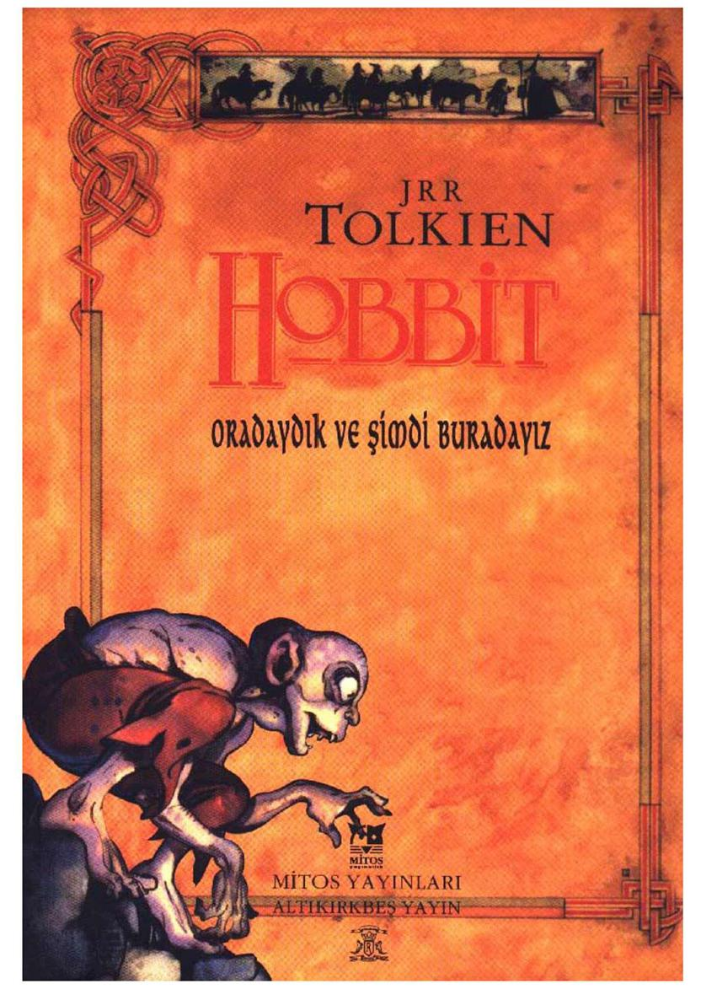
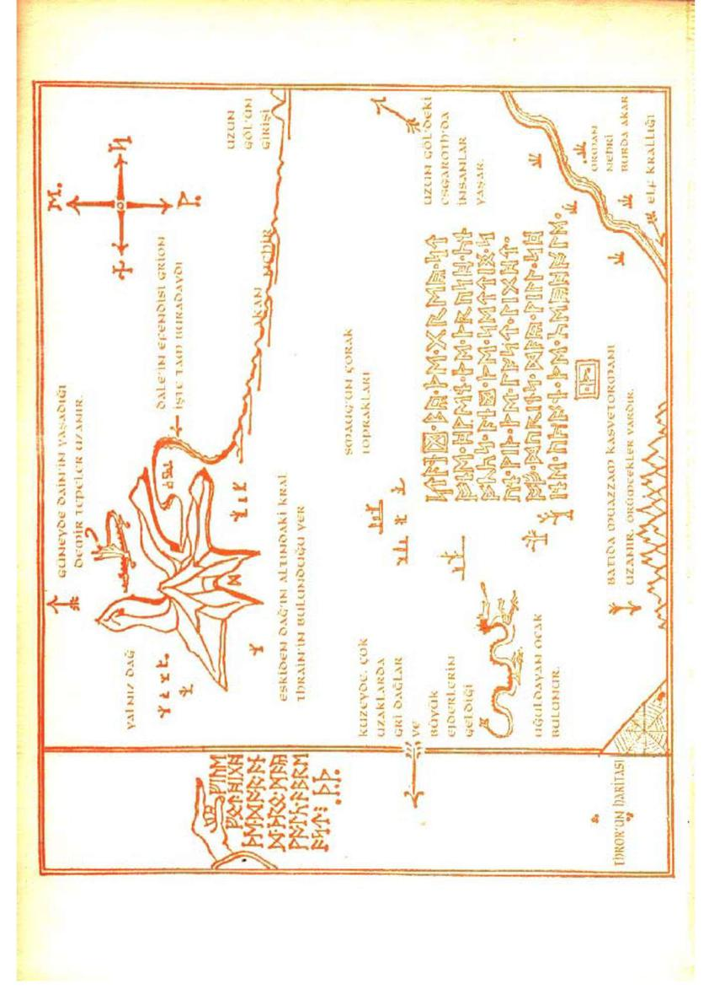
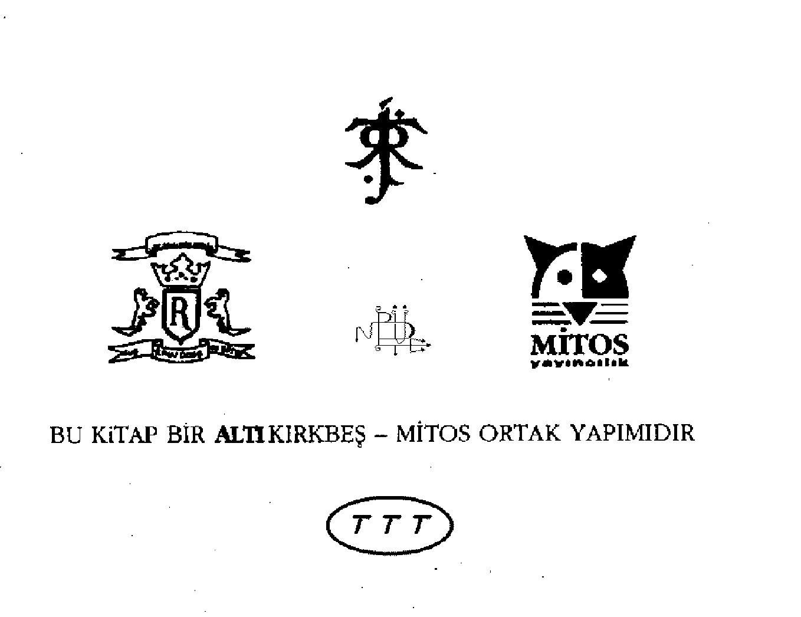
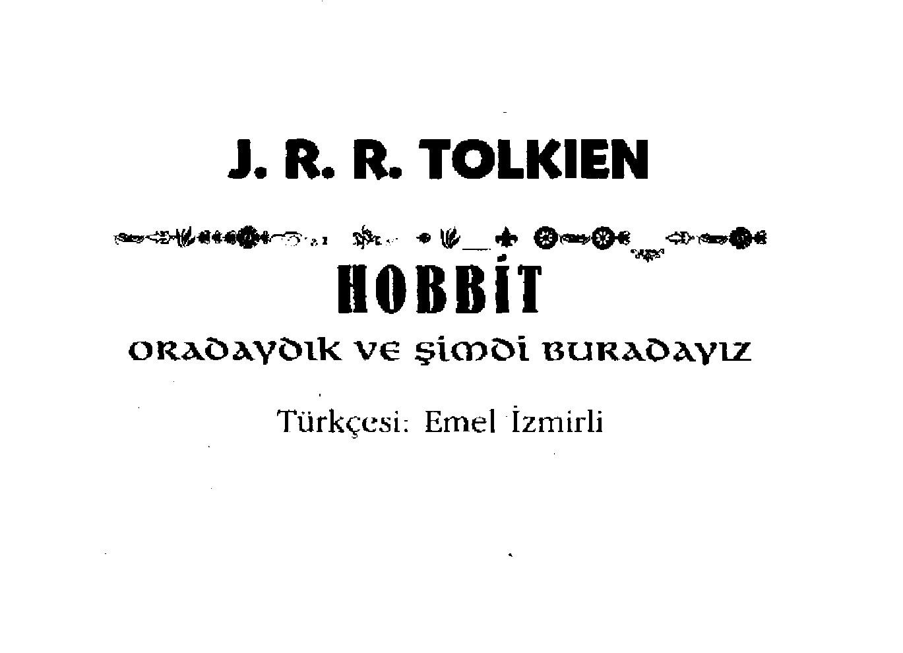
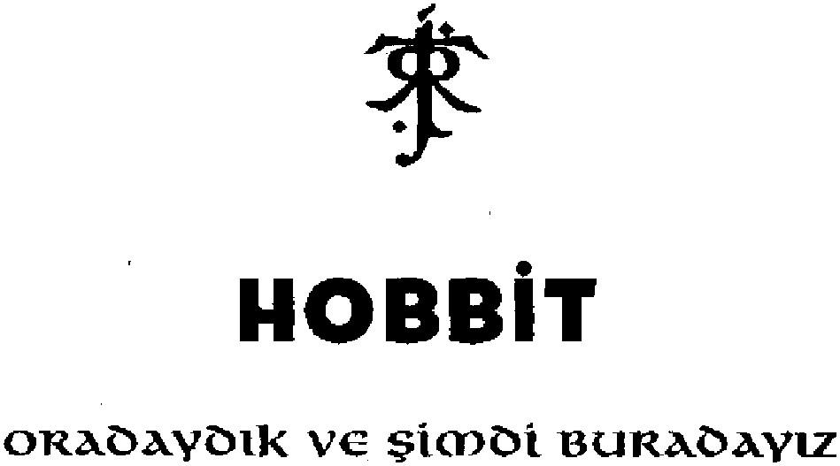
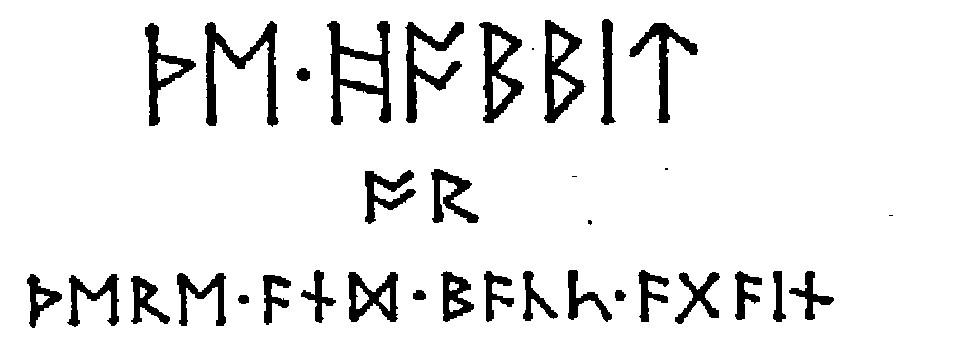

ALTIKIRKBEŞ YAYİN 36 MİTOS YAYINCILIK w
J.R.R. Tolkien - Tbe Hobhit, 1937 Türkçesi: Emel İzmirli ı. Baskı: Temmuz 1996
Bu kitabın Yayın Yönetmenleri M. Küpüşoğlu / Ç. Şan / K Çaydamlı
Kapak Tasarımı Altuğ Güzey ("Figür)
Dizgi Zeiiha Güler
Baskı Mart Matbaası
Bu çevirinin yayın haklarını sahiplendik. Tanıtım alıntıları dışında -makul boyutlarda- izinsiz çoğaltılması ahlak kurallarına ve yasalarımıza aykırı görünmektedir. Böyle bir harekete kalkışmak istediğinizde önce bize sorarsanız uygar dünya adına seviniriz.
P.S.: Tüm fotokopi fanzinler, yukardaki açıklamadan bağımsızdırlar. Onlar istedikleri ALTIKIRKBEŞ (sadece bu kitap için MİTOS da olabilir) kitabını veya metnini çoğaltabilir, bozup yeniden yaratabilirler. Okurlarımızı yasal dergileri değil "fotokopi fanzinleri" izlemeye çağırıyoruz. Onlar sizi uçurumdan aşağı itecek güce sahiptirler ve uçmayı öğrenmenin zamanı geldi. Yaşasın FOTOKOPİ, Yaşasın KAOS
ALTIKIRKBEŞ YAYIN bir Kaybedenler Klübü tiribidir Yazışma adresi: P.K. ıi4 Acıbadem, İstanbul Tel: (o.2lü) 249 51 68- 249 08 21
MİTOS YAYINCILIK ise bir LTD. şti.'dir Yazışma adresi: e-ma il: mit os@levi.com.tr Tel i Fax: (0.212) 245 00 26
AKBN 96-7-4-56-1601 -QX-JRRT ISBN 975-8023-2S~X

ALTIKIRKBEŞ YAYIN / MİTOS YAYINCILIK
İstanbul 1996
kişisel toplantı notları'ndan
i./
Her uyku dilimi, geçmişe yönelik bütün bilgilerimi siliyor ve her sabah, yeniden öğrenmek zorunda kalıyorum. Bütün isimleri, işimle ilgili bütün bilgileri, bedenleri ve kıvrımları, alışılmışları. Yabancı bir dünyaya uyanmayı bile anımsayamıyorum bazen. Öğrendiğim şeyleri, uykusuzluk hastalığına yakalanamadığım için, belirsiz bir süre sonra kaybediyorum. Bilgilerimin zamana, daha doğrusu uykusuzluğa bağlı olması, kaybediş için bir zorunluluk halini alıyor.
Tolkien'in belleğin ve geçmişin hayaletlerinin oyun gücüne dayanarak elfler ve hobbitler üreten bir adam olduğunu hatırlıyorum. Yaklaşık bir yıllık bir uğraş, çevirmen, düzelti, Küpüşoğlu faktörü, yurtdışı faksları, tahmini olarak şişman bir İngiliz kadını — yazlan güney sahillerimizdeki açık pazarı ziyaret edenlerden-, araya giren bir yayınevi, enteresan gelişmeler ve Küpüşoğlu'nun bir sır gibi sakladığı ayak oyunları... Yenilgi ve zafer. Nihai ölçüde kanundışılık. Tüm bunları birileri anlatmak zorunda bana.
Amnesia. Sabah, vapurdayım, belleğim o kadar zayıfladı ki.
Ç
Unutuşlar ve Unutuluşlar Ana Bilim
Dalı II./
Vay canına sayın okuyucular, vay canına*
K.
6.45 M. Myst ere Takipçileri Birimi *) Olay zaten yeterince karışık, karmaşayı daha da arttırmak adına, olayın başladığı ilk yıllara dönmek istiyorum. - Hayatımız hep ilk'ini bulma arayışıyla mı geçecek? Saflık ilk'likle orantılı bir şey mi? Kaybetmenin bir coğrafyası olabilir mi? Mutlak değer parantezi hayat içinde bir kullanım alanı bulabilir mi?- VDGG'den sonra satın alınabilecek herhangi bir ses nesnesi kaldı mı? diye düşünürken dinledik ilk Maritlion'u.

İçindekiler
i Beklenmedik Bir Parti n z Kuyu Kebabı 39 3 Kısa Bir Dinlenme 5 7 Tepenin Üstünde, Tepenin Altında 67
5 Karanlıktaki Bilmeceler sı 6 Yağmurdan Kaç, Doluya Tutul 104 7 Tuhaf Pansiyon 126 a Sinekler ve Örümcekler ise 9 Fıçılarla Kaçış ısr ıo Sıcak Bir Karşılama 207 n Kapının Eşiğinde 220 12 İçerden Sızan Bilgiler 230
Evde Yokuz 253
Su ve Ateş 2 es 15 Fırtına Geliyor 275
16 Gecede Bir Hırsız 286 17 Fırtına Kopuyor 293 ıs Dönüş Yolculuğu 3oe 19 Son Aşama 316

Bu çok eskilerin bir hikâyesidir. O zamanlarda konuşulan diller ve kullanılan harfler bugün kullandıklarımızdan oldukça farklıydı. Hikâyeyi anlatmak için İngilizce kullanılmıştır. Dikkat edilmesi gereken iki nokta vardır. (1) İngilizce'de dıvarfm (cüce) çoğulunun doğrusu dıvarf s (cüceler) ve sıfat hali dwarfish'dır (cücesel). Ama bu hikâyede dwarwes ve dwarwish kullanılmıştır; o da Thorin ve arkadaşlarının ait olduğu eski halktan bahsedilmesi durumunda.* (2) Orcf İngilizce bir sözcük değildir. Yalnızca bir iki yerde geçmektedir, genellikle goblin (daha büyük türleri için hobgoblin) diye çevrilmiştir. Orc\ o sıralar hobbitlerin bu yaratıklara taktığı isimdir ve bu sözcüğün bizim yunus balığı türü deniz hayvanları için kullandığımız orc, ork sözcükleriyle hiçbir ilişkisi yoktur.
Runler aslında tahta, taş ya da metal üzerine, keserek ya da kazınarak yazılan eski harflerdi; bu nedenle de ince ve köşelidirler. Bu hikâyenin geçtiği sıralarda bu harfleri sadece Cüceler düzenli olarak kullanıyorlardı; özellikle de özel ve gizli kayıtlar için. Cücelere ait runlar bu kitapta bugün çok az sayıda insan tarafından bilinen İngilizce runlarla gösterilmiştir. Eğer Thror'un haritasındaki runlar, çağdaş harflerle yazılmış haliyle (bkz. s, 30 ve 65)
[1] Bunun nedeni The Lord of the Ringdin 3- cildinde verilmiştir. (İkinci baskı, s. 415.)
karşılaştırılacak olursa, modern İngilizce'ye uyarlanmış alfabe de çözülebilir ve yukarda verilen başlık da
okunabilir, Haritada X harfi için verilen ^ dışında her harf kullanılmıştır. J ve V yerine I ve U kullanılmıştır, Q harfine karşılık gelen run yoktur (CW kullanılmıştır); Z harfi için
de run olmadığından bunun yerine ^ cüce runu kullanılabilir. Bununla birlikte bazı çağdaş ikili harfler için tek runlar vardır; tb, ng, ee, başka bazı runlarda ^ ve W si) kullanılmıştır. Gİ2İİ kapı DM ile işaretlenmişti. Yanda buna işaret eden bir elin altında şunlar yazılıydı.
/
Son iki run Thror ve Thrain'in isimlerinin baş harflerini simgeliyor.
Elrond'un çözdüğü ay runları ise şunlardı: M-^M.'H r*HîI S *sr»+'M> + H >MFt* ■
Pirr -»tNI+M-nKîH
Haritada yönlerde Doğu genellikle cüce haritalarında olduğu üzere yukarıyı gösteriyor ve saat yönüyle şöyle devam ediyor: (D)oğu, (G)üney, (B)atı, (K)uzey.
BöLücn i
BekLeMCDGöik BİR PARTİ
Toprakta bir kovukta bir hobbit yaşardı. Bu kovuk ne, solucan pislikleriyle dolu, yapışkan kokulu, ıslak, kirli ve iğrenç bir kovuk, ne de kum, çıplak, kumlu, içinde ne yiyecek ne de üzerine oturulabilecek bir şeyler bulunan bir kovuktu: Bu bir hobbit-kovuğuydu, ki bu da rahatlık demekti.
Bu kovuğun lumboz kadar mükemmel yuvarlaklıkta yeşile boyalı bir kapısı ve kapısının tam ortasında da pırıl pinK san pirinç bir tokmağı vardı. Kapı, boru gibi tünelimsi bir hole açılırdı, Bu havadar tünel, lambrili duvarları, fayans döşeli ve halı kaplı yerleri, cilalı iskemleleri ve bir sürü şapka ve palto asacağıyla - bizim hobbit misafirlere bayılırdı - müthiş rahat bir tüneldi. Tünel, hemen hemen Tepe'nin - civardaki halk oraya bu adı vermişti - yamacına kadar kıvrıla kıvrıla giderdi ve birçok yuvarlak, minik kapı da önce bir tarafta sonra diğerinde olmak üzere bu tünele açılırdı. Hobbit için üst kat söz konusu değildi: Yatak odaları, banyolar, mahzenler, kilerler (ki bir süıü kiler vardı), gardıroplar (daha doğrusu yalnızca giysilere ayrılmış odalar), mutfaklar, yemek odaları, hepsi, hepsi aynı kattaydı, hatta aynı geçitte. En güzel odaların tümü içeriye doğru girerken solda kalırlardı, çünkü yalnız bu odalann derin, yuvarlak pencereleri bahçesini ve nehre kadar uzanan çayırları görürdü,
Bu hobbit hali vakti yerinde bir hobbitti ve adı da
Baggins'di. Bagginsler hatırlanamayacak kadar uzun bir süredir Tepe'nin civarlarında yaşıyorlardı ve halk onları yalnızca varlıklı oldukları için değil, özellikle de hiç maceraya atılmadıkları ve beklenmedik bir şeyler yapmadıkları için çok saygın bulurdu: Öyle ki bir Baggins'İn herhangi bir soruya ne yanıt vereceğini daha soruyu sormadan bilebilirdiniz. Bu hikâye bir Baggins'İn nasıl bir maceraya atıldığının ve kendisini nasıl hem , beklenmedik şeyler yapar hem de beklenmedik şeyler söylerken bulduğunun hikâyesidir, Belki komşularının saygısını yitirmiştir, ama kazandığı şeyler — neyse, sonunda bir şey kazanıp kazanmadığını nasıl olsa göreceksiniz.
Şu bizim özel hobbitimizin annesi - hobbit de ne mi? Hımm, sanırım hem günümüzde iyice azaldıklarından ve hem de bize verdikleri isimle Büyük İnsanlardan korktuklarından dolayı hobbitlerin biraz anlatılmaya ihtiyaçları var. Hobbitler nerdeyse yan boyumuzda, sakallı cücelerden bile ufak, minik insanlardır (ya da insanlardı). Hobbitlerin sakalı yoktu. Sizin ya da benim gibi iri bir aptal, bir mil öteden bile duyabilecekleri fil gibi sesler çıkarla çıkart a, sağına soluna bakmadan geldiği zaman, hemen sessizce kaybolmalarına yardım eden sıradan günlük sihirleri dışında bir numaraları yoktur. Göbek yapmaya eğilimlidirler; parlak renkli (daha çok yeşil ve san) giysiler giyerler; ayakiannda kafalarındakine benzeyen kıvırcık, gür, kahverengi tüyler ve kalın derili bir tabanları olduğundan ayakkabı giymezler; uzun, zeki, kahverengi parmakları, tonton yüzleri ve (özellikle mümkün olursa günde iki kez yedikleri akşam yemekleri sonrasında attıkları) kocaman şen şakrak kahkahalan vardır. Eh artık devam etmeye yetecek kadar biliyorsunuz; dediğim gibi bu hobbitin - yani Bilbo Baggins'İn - annesi ünlü Güzellergüzeli Took'du, Tepe'nin dibinde akan küçük nehrin, Su'nun, karşı tarafında yaşayan hobbitlerin başı,
Yaşlı Took'un üç harikulade kızından biri. Sık sık, Took atalarından birinin bir periyle evlendiğine dair bir söz dolanırdı (diğer aileler arasında). Bu çok saçmaydı elbette, ama onlarda tamamıyla hobbitvari olmayan bir şeylerin olduğunu ve Took klanından birilerinin kırk yılda bir de olsa gidip macera yaşadıklarını göz ardı etmemek gerekirdi. Tedbiri elden bırakmadan ortadan koybolurlar, aile de bunu örtbas ederdi; ama Took'ların Baggins'lerden şüphe götürmez denli zengin olmalarına rağmen, onlar kadar saygın olmadıklan gerçeği de değişmezdi.
Güzellergüzeli Took, Bayan Bungo Baggins olduktan sonra hiç maceraya falan atılmadı. Bılbo'nun babası Bungo, onun için (ve kısmen onun parasıyla) Tepe'nin civarındaki- lerden, Su'nun öteki tarafındakilerden bile daha lüks, hatta en lüks hobbit-kovuğunu yaptı ve ömürlerinin sonuna dek orada yaşadılar. Güzellergüzeli'nin tek oğlu Bilbo, sağlam karakterli ve rahatına düşkün babasının adeta İkinci bîr kopyası gibi gözükmesi ve davranmasına rağmen yine de yapısında, Took soyundan, azıcık garip, ortaya çıkmak için fırsat kollayan bir şeyle r olması olasıydı, îşte bu fırsat, ta ki Bilbo Baggins büyüyüp, elli yaşlarına gelene dek hiç ortaya çıkmadı. Bilbo bu sıralarda, size daha önce bahsettiğim, babasının yaptığı şu güzel hobbit-kovuğuna bir daha taşınmamak üzere yerleşmişti.
Çook, çok önce dünyanın sessizliğinde bir sabahtı ve yeryüzünde daha az gürültü ve daha çok yeşil varken ve bir sürü hobbit rahat rahat yaşarken, Bilbo Baggins kahvaltısını yapmış, kapısında duruyor ve nerdeyse kıvırcık tüylü (ki bu tüyler güzelce taranmıştı) ayaklanna dek uzanan dehşet uzun tahta bir pipoyu tüttürüyordu ki garip bir şey oldu - Gandalf çıkageldi. Gandalf! Eğer siz, benim onun hakkında duyduklarımın yalnızca dörtte birini dahi duymuş olsaydınız - ki benim duyduklarım bile onun hakkında duyulabileceklerin küçücük bir kısmı - harikulade bir hikâyeye hazır olurdunuz. O nereye gitse en olağanüstü hikâyeler ve maceralar orada boy verirdi. Doğrusu uzun, çok uzun zamandır, taa eski dostu Yaşlı Took öldüğünden beri, Tepe'nin altındaki bu yollara gelmemişti, öyle ki nerdeyse hobbitler onun neye benzediğini bile unutacaklardı, Öuradakı hobbitler daha küçük, minicik hobbit çocuklarken, o, Tepe'nin ötesinde, Su'nun öbür tarafında kendi işleriyle meşguldü.
Hiçbir şeyden kuşkulanmayan Bilbo, o sabah bastonlu yaşlı bir adam gördü. Uzun, sivri uçlu, mavi bir şapkası, uzun, gri pelerini, beyaz sakalının üzerinden geçip ta belinin altına kadar düştüğü gümüşi bir atkısı ve kocaman siyah çizmeleri vardı.
İyi günler!' dedi Bilbo ve yalnızca bunu söylemek istedi. Güneş pırıl pırıl parlıyordu ve çimenler yemyeşildi. Ama Gandalf, uzun, gür, uçlan gölgeli şapkasının kenarından bile çıkan kaşlarının altından ona baktı.
'Ne demek istiyorsun?' dedi. 'Bana iyi bir gün mü diliyorsun, yoksa istesem de istemesem de iyi bir gün olacağını mı söylemek istiyorsun; ya da bugünün iyi olduğunu mu, yoksa iyi olunabilecek bir gün olduğunu mu?'
'Hepsini birden,' dedi Bilbo. 'Ayrıca dışarda bir pipo tütün içmek için de harika bir gün olduğunu, Eğer yanınızda bir piponuz varsa oturun ve tütünümden bir tutam alın! Telaşa hiç gerek yok, önümüzde koskoca bir gün var!' Sonra Bilbo kapısının yanında bir tabureye oturup bacak bacak üstüne attı ve bozulmadan Tepe'nin üzerinden süzülüp gidecek hoş, gri bir duman-halkasmı havaya üfledi.
Çok güzel!' dedi Gandalf. Ama bu sabah duman- halkalar üfleyecek vaktim yok. Düzenlediğim maceraya katılacak birisini arıyorum ve bu sıralar böyle birisini bulmak da epey zor/
'Bence de öyle - hele kî bu bölgede! Bizler sıradan, sessiz kimseleriz ve ben de maceralardan hiç hoşlanmam. Rahatsız edici, tatsız, berbat şeylerdir, üstelik yemeğe gecikmenize de neden olurlar! İnsanların maceralarda ne bulduğunu bir türlü anlayamıyorum/ dedi bizim Bay Baggins ve başparmaklarından birini pantolon askısına geçirip daha da büyük bir duman-halka daha üfledi. Sonra yaşlı adam orada değilmişçesine sabah mektuplarını çıkartıp okumaya başladı. Onun pek de kendisine göre birisi olmadığına karar vermişti ve çekip gitmesini diledi. Ama yaşlı adam kıpırdamadı, Orada, öylece sopasına dayanıp, ağzını bile açmadan gözlerini hobbite dikti; ta ki Bilbo iyice rahatsız olup biraz da aksilenene dek.
İyi günler!' dedi en sonunda. fBiz burada macera falan istemiyoruz, teşekkürler! Tepe'nirt ardına bir bakın ya da Su'nun öbür kıyısını deneyin.' Ve böylece konuşmasının sona erdiğini söylemek istiyordu.
'iyi günleri ne kadar çok şey için kullanıyorsun öyle!' dedi Gandalf. 'Şimdi de benden kurtulmak istediğini ve ben gitmeden rahatlayamayacağını söylemek istiyorsun.'
'Rica ederim, sayın bayım, rica ederim! Durun bakayım, henüz isminizi bildiğimi sanmıyorum.'
'Evet, evet, biliyorsunuz sevgili bayım - ben de sizin isminizi biliyorum, Bay Bilbo Baggins. Ve benim o isme ait olduğumu hatırlamasanız bile, siz de benim ismimi biliyorsunuz. Ben Gandalfım ve Gandalf da ben demektir. Kapıya gelip düğme satıyormuşçasına, Güzellergüzeli Took'un oğlu tarafından iyi günlenmek için mi bunca zaman yaşadım!'
'Gandalf, Gandalf Aman Tanrım! Şu kendilerini birbirlerine ilikleyip, sonra da emir alana dek çözülmeyen bir çift sihirli elmas kol düğmesini Yaşlı Took'a armağan eden gezgin büyücü değil mi? Şu eğlencelerde ejderhalar, gobl inler, devler, kurtanlan prensesler ve dulun oğullarının beklenmedik şanslanyla ilgili harika hikâyeler anlatan kişi değil mi? Şu en güzel, en mükemmel havai fişekleri yapan adam mı! Onlan hatırlıyorum! Yaşlı Took Yaz dönümü arifesinde patlatırdı onlan. . Muhteşemdiler! Ateşten kocaman nilüferler, arslanağızlan, sarısalkımlar gibi yükselirler, akşamın alacakaranlığında öylece asılı kalırlardı!' Sizin de fark edeceğiniz gibi Bay Baggins olduğunu sandığı kadar sıkıcı değildi, üstelik çiçeklerden çok hoşlanıyordu. 'Tanrım!' diye devam etti. 'Şu bir sürü genç kız ve delikanlının çılgın maceralar İçin Mavi'ye gitmesinden sorumlu Gandalf değil mi? Ağaçlara tırmanmaktan, elfleri ziyarete - ya da teknelerle uzak diyarlara yelken açmaya dek! Olur şey değil, bir zamanlar hayat oldukça ilg- yani siz bir zamanlar burada ortalığı birbirine katardınız. Özür dilerim, ama hâlâ bu işlerle ilgilendiğinizi bilmiyordum/
'Ya neyle ilgilenmeliydim?' dedi büyücü. 'Bununla beraber benim hakkımda bir şeyler hatırlamana sevindim. Havai fişeklerimi hatırlar gibisin ve bu da ne olursa olsun ümitsiz vaka olmadığını gösterir. Doğrusu yaşlı büyükbaban Took'un ve elbette zavallı Güzellergüzeli'nin hatırı için sana istediğini vereceğim.'
'Affınızı dilerim ama ben hiçbir şey istemedim,'
'Evet, istedin! Hem de iki kere. Affettim ve bunu sana veriyorum. Hatta seni bu maceraya gönderecek kadar da ileri gideceğim. Benim için harika olacak, senin içinse mükemmel - ve çok da kazançlı, çok. Elbette üstesinden gelebilirsen.'
'Özür dilerim! Ben macera falan istemiyorum, teşekkür ederim. Bugün değil. İyi günler! Ama lütfen çaya buyurun - ne zaman isterseniz! Hatta neden yarın olmasın! Yarın gelin! Hoşça kalın!' Ve hobbit dönüp yuvarlak yeşil kapısından hızla içeri girip, cesaret edebildiği kadar çabucak kapattı. Büyücüler her şeye rağmen büyücüydüler.
'Sanki ne diye onu çaya davet ettim ki!' diye kendi kendine söylendi kilere girerken. Daha yeni kahvaltı etmişti, ama bu gerilimden sonra bir iki dilim kek ve içecek bir şeylerin kendisine iyi geleceğini düşündü.
Bu sırada Gandalf kapının önünde durmuş, sessizce ama uzun uzun gülüyordu. Bir süre sonra ayaklandı ve elindeki bastonun sivri ucuyla hobbitin güzel yeşil kapısına garip bir işaret kazıdı, Sonra, tam Bilbo ikinci dilim kekini bitirip, maceralardan paçayı iyi kurtardığını düşünmeye başladığı sırada kocaman adımlarla uzaklaştı.
Ertesi gün geldiğinde Bilbo nerdeyse Gandalf'ı unutmuştu. Zaten eğer Randevu Tahtası1 na Çarşamba Gandalf la Çay gibisinden bir not almazsa, bu tür şeyleri kolay kolay hatırlayamazdı. Dün de böyle bir not almayı anımsayamayacak kadar aklı başından gitmişti,
Çay vaktinden azıcık, önce kapı korkunç bir şekilde çalındı ve işte o zaman hatırladı! Aceleyle koşup çaydanlığı ateşe, bir çay bardağıyla tabağını ve fazladan bir iki dilim keki de masaya koyarak kapıya koştu.
Tam, 'Sizi beklettiğim için özür dilerim!' diyecekti ki kapıdakinin hiç de Gandalf olmadığını gördü, Bu, mavi sakalı altın bir kemere sıkıştırılmış ve koyu yeşil başlığının altında gözleri pırıl pırıl parlayan bir cüceydi ve kapı açılır açılmaz davet edilmişcesine içeriye daldı.
Başlıklı pelerinini en yakın askıya asıp, 'Dwalin, hizmetinizdeyim!' dedi yerlere kadar eğilerek.
'Bilbo Baggins, ben de vSİzinP dedi hobbit, öyle şaşırmıştı ki hiçbir şey soramadı o an. Bunu takip eden sessizlik rahatsızlık derecesine varınca da ekledi; 'Çay içmek üzereydim, lütfen gelip bana katılın.' Belki biraz resmiydi, ama içten bir şekilde bunu söylemek istemişti. Davetsiz bir cüce gelip hiçbir açıklama yapmadan holünüze eşyalar assa siz ne yapardınız ki?
Masada pek uzun oturmamışlardı, hatta daha ancak üçüncü kekteydiler ki kapı bir kez daha ve bu kez daha da
büyük bir gürültüyle çalındı.
'İzninizle!' dedi hobbit ve kapıya yöneldi.
'Sonunda gelebildiniz!' diyecekti Gandalfa. Ancak gelen Gandalf değildi. Onun yerine kırmızı başlıklı, beyaz sakallı, oldukça yaşlı gözüken bir cüce vardı kapıda ve o da kapı açılır açılmaz davet edilmişçesine içeriye daldı.
'Görüyorum ki gelmeye başlamışlar/ dedi Dwalİn'in asılı duran yeşil başlığı gözüne çarpınca. Kendi kırmızı başlığını bunun yanına asıp elini göğsüne koydu ve, 'Balin, hizmetinizdeyim!' dedi.
'Teşekkür ederim!' dedi bir nefeste Bilbo. Belki bu söylenmesi gereken şey değildi, ama gelmeye haşlamışlar lafı onu fazlasıyla telaşlandırmıştı. Tamam, misafirleri severdi, ama misafirler gelmeden önce haberdar olmayı da severdi. Üstelik misafirlerini kendisinin davet etmesini tercih ederdi. Birden keklerinin yetmeyebileceği gibi korkunç bir düşünce geldi aklına, - gerçi evsahibi olarak görevini bilir ve ne kadar rahatsız edici olursa olsun yerine getirirdi - ama keksiz idare etmek zorunda da kalabilirdi.
'İçeri girin ve bir çay alın!1 demeyi becerdi uzun bir nefesin ardından.
'Eğer sizin için fark etmeyecekse ben biraz birayı tercih ederim sayın efendim/ dedi beyaz sakallı Balin. 'Ama eğer varsa biraz keke - yani susamlı keke elbette hayır demem.1
Bilbo tüm şaşkınlığına rağmen, 'İstemediğiniz kadar!' diyerek mahzene koca bir kupa bira doldurmaya ve sonra da akşam yemeğinin ardından atıştırmak üzere öğleden sonra yaptığı iki güzel yuvarlak susamlı keki almaya kilere gider buldu kendisini.
Geri döndüğünde Balin ve Dwalin masada oturmuş, iki eski dostmuşçasına sohbet ediyorlardı (eh, zaten aslına bakarsanız kardeştiler). Bilbo birayı ve keki tam önlerine koymuştu ki bangır bangır bir zil sesi, sonra bir zil sesi daha duyuldu.
'Bu sefer kesin Gandalf tır,' diye düşündü Bilbo, öfleye püfleye geçidi geçerken. Ama yanıldı. İkisi de mavi başlıklı, gümüş kemerli ve sarı sakallı iki cüce daha gelmişti ve her birinin elinde bir torba alet edavat ve bir bahçıvan beli vardı. Kapı açılır açılmaz içeri daldılar - Bilbo şaşıramadı bile.
'Sizler için ne yapabilirim, cücelerim?' dedi Bilbo.
'Kili, hizmetinizdeyim!' dedi birisi. 'Fili, ben de!' diye ekledi diğeri; ve ikisi de başlıklarını çıkartıp eğilerek selam verdiler.
'Ben de sizin ve ailelerinizin!' diye yanıtladı Bilbo bu sefer görgü kurallarını unutmayarak.
'Görüyorum ki Dwalin'le Balin gelmişler bile,' dedi Kili. 'Hadi gidip curcunaya katılalım!'
'Curcuna mı?' diye düşündü* Bay Baggins. 'Bu fikri hiç sevmedim. Gerçekten bir iki dakika oturup, bir şeyler içmeli, aklımı başıma toplamalıyım.' Tam köşede oturmuş ve içkisinden bir yudum almış ve bu sırada cüceler de masanın etrafına oturmuş ve madenden, altından, goblinlerle olan dertlerinden, ejderhaların yağmalarından, ve daha anlamadığı, hoş fazla maceracı geldiği için de anlamak dahi istemediği pek çok şeyden bahsediyorlardı ki, zili ding-dong-a-ling-dang diye, sanki küçük yaramaz bir hobbit-çocuk kulpunu kopartmaya çalışıyormuşçasına çalındı.
'Kapıda birisi var!' dedi gözlerini kırparak.
'Sese bakarsak bence dördüsü,' dedi Fili. 'Hem biz onları tam arkamızdan gelirken görmüştük.'
Zavallı küçük hobbit hole çöküp ellerini başının arasına aldı ve ne olduğunu, ne olacağını ve hepsinin akşam yemeğine kalıp kalmayacağını merak etti. Sonra zil öyle gürültülü çalmaya başladı ve susmadı ki hemen kapıya koşmak zorunda kaldı. Bırakın dört olmalarını, tamı tamına BEŞ kişiydiler. O holde sallana dururken bir cüce daha gelmişti. Hepsi birer birer içeri dalıp birbiri ardına selam vermeden ve 'hızmetinizdeyim' demeden önce zor bela kolu çevirdi. İsimleri Dori, Nori, Ori, Oin ve Gloin'di ve hemen iki mor, bir gri, bir kahverengi, ve bir beyaz başlık askılarda yerlerini aldılar ve cüceler de kocaman elleri altın ve gümüş kemerlerinde, diğerlerine katılmak üzere ilerlediler. Çoktan bir curcuna oluşmuştu bile. Bazısı tatlı bira, bazısı kara bira, biri kahve ve hepsi de kek İstedi, dolayısıyla da hobbit bir süre başını bile kaşıyamadı,
Koca bir çaydanlık kahvenin ateşe konulduğunu, susamlı keklerin tükendiği ve cücelerin tereyağlı bir gözlemeye başladığı sırada kapının kuvvetli kuvvetli vurulduğu duyuldu. Gerçekten zil çalmıyordu, hobbitin güzel yeşil kapısına güm güm diye vuruluyordu. Birisi sopayla vuruyordu kapıya!
Ve Bilbo, hem şaşkın ve bunalmış, hem de çok kızgın, geçit boyunca aceleyle koştu, - bu başından geçen en münasebetsiz çarşambaydı. Kapıyı öyle hızlı çekip açtı ki, kapıdakilerin hepsi birbirlerinin üzerine düştüler. Biraz cüce daha, tam dört cüce! Ve arkalarında Gandalf bastonuna dayanmış gülüyordu. Bilbo'nun güzel kapısına oldukça büyük bir çentik atmış ve böylece önceki sabah oraya yaptığı gizli işareti yok etmişti.
'Dikkatli ol, Dikkatli ol!' dedi, 'Dostlarını paspasta bekletip sonra da kapıyı mantar tabancası gibi açmak hiç sana yakışmıyor Bilbo! İzninle Bifur, Bofur, Bombur ve özellikle de Thorin'i tanıştırayım!'
Bifur, Bofur ve Bombur sıraya girip, 'Hizmetinizdeyiz!' dediler, Sonra iki sarı, bir soluk yeşil, bir de uzun gümüşi püsküllü gök mavisi başlığı askılara astılar. Bu sonuncu başlık, çok çok önemli bir cüceye, Thorin'e, daha doğrusu Thorin Meşekalkan'ın ta kendisinden başkasına ait değildi ve Thorin, üstünde Bifur, Bofur ve Bombur'la Bilbo'nun paspasına düşmüş olmaktan hiç mutlu görünmüyordu.
Hem Bombur oldukça şişman ve ağırdı. Thorin ise gerçekten kibirli birisiydi ve hizmet konusunda hiçbir şey söylemedi; ama zavallı Bay Bilbo Baggins öyle çok özür diledi ki sonunda, 'lütfen, rica ederim' diye homurdandı ve kaşlarını çatmaktan vazgeçti.
'Artık hepimiz buradayız!1 dedi Gandalf, onüç başlığın oluşturduğu diziye - en iyi ayrılabilir parti başlıkları - ve askıda asılı duran kendi şapkasına bakarak, 'Oldukça keyifli bir toplantıl Umarım geç gelenler için de yiyecek içecek bir şeyler kalmıştır! O ne? Çay mı! Hayır, teşekkür ederim! Ben biraz kırmızı şarap alacağım sanırım.'
'Ben de,' dedi Thorin.
'Ve yabançileği reçeliyle elmalı turta da,' dedi Bifur.
'Ve üzümlü turtayla peynir,' dedi Bofur.
'Ve eüi börekle salata da,' dedi Bombur.
'Ve biraz daha kek - ve tatlı bira - ve kahve, elbette sakıncası yoksa,' diye bağırdılar kapıdan diğer cüceler.
'Bir iki tane de yumurta al, buna çok sevinecek birisi var!1 diye bağırdı Gandalf tam kilere doğru koşturan hobbitin arkasından, fVe söğüş tavukla salatalık turşusu da getir!
'Kilerimin içini en az benim kadar iyi biliyor gibi!' diye düşündü, berbat bir maceranın evinde patlayıp patlamadığını merak etmeye başlayan Bay Baggins. Ve bu arada şişeleri, kap kaçağı, bıçakları çatalları, , bardakları, tabaklan ve kaşıkları ve daha bir sürü şeyi büyük tepsilere yerleştirmişti ve gitgide kızarıyor ve sinirleniyordu.
'Baş belası ve sıkıntı kaynağı cüceler!' dedi yüksek sesle, 'Neden gelip bir el atmıyorlar?' Tam bu sırada başına ne gelse beğenirsiniz! Balin ve Dwalin mutfağın kapısında, Fili ve Kili de onların tam arkasında duruyorlardı ve o bıçak bile diyemeden tepsileri, bir çift küçük masayı çabucak salona atıp, her şeyi yeniden kurdular.
Gandalf etrafında onüç cüceyle ziyafet sofrasının başına oturmuş: Bilbo da ateşin başında bir tabureye çökmüş, bir bisküvi kemiriyor (çünkü iştahı çoktan kaçmıştı) ve tüm bu olanlar tamamen sıradan ve hiçbir biçimde maeerasal falan değilmiş gibi gözükmeye çalışıyordu. Cüceler yedikçe yediler, konuştukça konuştular ve zaman geçip gitti. Sonunda sandalyelerini geri çektiler ve Bilbo tabaklan ve bardakları toplamak üzere ayağa kalktı.
'Sanırım hepiniz yemeğe kalacaksınız?' dedi en kibar ve ısıarsız tonuyla.
'Kuşkusuz!' dedi Thorin, 'Ye daha sonrasına da. İşe vakit iyice geç olmadan başlamayacağız, hem önce biraz müziğimiz olmalı, Şimdi temizlik zamanı!'
Ve o dakika oniki cüce - Thorin dışındaki cüceler, çünkü o önemli birisiydi ve Gandalfla konuşmaya devam etti - ayağa fırlayıp, her şeyi üst* üste dizdiler ve tepsileri beklemeden, üzerlerinde birer şişeyle tabak yığınlarını tek ellerinde dengeleyerek çıktılar. Tabii, hobbit korkudan nerdeyse titreyerek, 'Lütfen dikkat edin!' ya da 'Lütfen uğraşmayın! Ben halledebilirim,' diye peşlerinden. Ancak cüceler yalnızca şarkı söylemeye başlayıp yaptıklarına devam ettiler.
Tuz buz edin bardakları ve parçalayıp kurtulun tabaklardan!
Köreltin bıçaklan ve bükün çatalları/
Bilbo Baggins nefret eder tüm bunlardan-
Vurun şişeleri ve yakın mantarları!
Kesin örtüleri ve hulaytn yağa!
Dökün tüm sütleri kilerin toprağına!
Bırakın kemikleri yatak odasının paspasına!
Püskürtün şarapları badi tüm kapılara!
M
Satırın çanak çömleği kaynayan suya!
Ezin onları sonra kocaman bir sopayla/
Ve işiniz bittiğinde eğer sağlam olam kalmışsa/ Koridora gönderin onlan yuvarlamaya!
Bilbo Baggins nefret eder tüm bunlardan/
Haydi, dikkatli olun! Dikkatli olun tabaklarlan!
Ama tabii bu korkunç şeylerin hiçbirisini yapmadılar ve hobbit mutfağın ortasında dönüp duruyor ve ne yaptıklarını görmeye çabalıyorken, her şey bir şimşek çabukluğunda temizlenip sağ salim yerleştirildi. Sonra' odaya döndüler ve Thorin1 i ayaklanmış, eşikte pipo içerken buldular. Olabilecek en kocaman duman- halkalarını havaya üflüyor ve bu duman-halkaları da o nereye gitmelerini söylerse oraya - bacadan yukarı, şöminenin üstündeki rafta duran saatin arkasına ya da masanın altına ya da tavanın orasına burasına - gidiyorlardı; ancak nereye giderlerse gitsinler, hiç Gandalfdan kaçabilecek denli hızlı olamıyorlardı. Gandalf da kısa, kil piposundan küçük bir duman-halkasını tam Thorin'inkilerin ortasına yolluyordu. Ve plop! Sonra Gandalfın duman-halkası yeşilleşip büyücünün başının üzerinde asılı kalmak üzere geri dönüyordu. Çoktan Gandalf ın başının üzerinde bir bulut oluşmuştu ve bu bulul, onun loş ışıkta garip ve büyülü gözükmesine yol açıyordu. Bilbo durup seyretti - duman-haİkalarını pek severdi - ve sonra dün sabah, rüzgârla Tepe'nin üzerine gönderdiği duman-halkalarıyla ne kadar da gururlandığını düşünüp utançtan kıpkırmızı oldu.
'Şimdi de biraz müzik zamanı!' dedi Thorin. 'Müzik aletlerini çıkartın!'
Kili ve Fili çantalanna koşup küçük kemanlar getirdiler; Dori, Nori ve Ori ceketlerinin bîr yerlerinden flütler çıkarttılar; Bombur bir şeyleri davul haline getirdi; Bifur ve Bofur da dışarı çıkıp, yürüyüş sopalarının arasına bıraktıkları klametleriyle geri döndüler. Dwalin ve Balin: 'Affedersiniz, ben benimkini verandada bıraktım!' dedi. Thorin de, 'Gelirken benimkini de getiriverin!' dedi. Onlar da kendileri kadar büyük viyolalarını ve Thorin'in yeşil bir örtüye sanlı harpını alıp geldiler. Çok güzel altın bir harptı ve Thorin parmaklarını dokundurur dokundurmaz müzik tümüyle bir anda başladı; öyle ani ve tatlıydı ki Bilbo'nun aklındaki her şey uçup gitti. Ve Tepe'nin altındaki hobbit- kovuğundan çok uzaklara, Su'nun ötesinin de uzağına, tuhaf ayların aydınlattığı karanlık diyarlara sürüklendi.
Tepeye doğru açılmış ufak pencereden içeri karanlık süzüldü ve şöminedeki alevler titrek titrek parıldadılar - nisan ayıydı — ve onlar, Gandalf ın sakalının gölgesi duvarda sallanırken çaldılar, çaldılar.
Karanlık tüm odayı doldurdu, ateş köz oldu, gölgeler kayboldu ve onlar çaldılar, çaldılar. Sonra aniden ilki, sonra bir diğeri ve diğeri hem çalıp hem söylemeye başladılar. Eski evlerin derin yerlerinde cücelerin pes sesten şarkıları; ve işte bu, eğer onların müziği olmadan dahi onların şarkısına benzeyebilecekse o şarkıdan bir parçadır.
Soğuk dumanh dağlar ardına Derin zindanlara ve yaşlı mağaralara Gitmeli buradan şafak atmadan, Solgun büyülü altını aramaya.
Eski cüceler yaptı güçlü sihirler; Ki bu arada balyozlar çmlaya çınlaya inerler Derin diplerinde uyur karanlık şeyler de, Dolu işte, dağlar altındaki oyuk salonlar.
Eski kral ve elflerin efendisi Parıldar yığın yığın altın istifi İşlediler ve oydular ve ışığı yakaladılar
Saklamak üzere mücevhere hir kthç kahzastndaki.
Dizdiler gümüş kolyeler üzerine Çiçeklenen yıldızları, geçirdiler taç içine Ejderha ateşini, burgulu teli Ördüler ay ve güneş ışığıyla göz göze.
Soğuk dumanlı dağlar ardına
Derin zindanlara ve yaşlı mağaralara
Gitmeli buradan şafak atmadan,
Çoktan unutulmuş altınımıza sahip çıkmaya.
Oydular orada pek çok kadeh kendilerine Ve harpler altından olma; aramaz ki kimse Yatarlar orada uzunca zaman? söylenmiş çok şarkı Duyulmamış insanlarca ya da elflerce.
Çamlar yükseklerde kükrer durur, Rüzgâr gece de inilder ulur. Ateş kırmızıdır; yayılır alevlenerek; Ağaçlar meşaleler gibi ışıldar nur.
Çalıyordu çanlar Dale'de Yukarı bakar insanlar soluk yüzlerle; Hem ateşten de yakıcı ejderin hiddeti Yerle bir etti kulelerini de evlerini de
Dağlar dumanlanır altında ayın; Cüceler mi, onlar duyar yazgının ayak sesini. Boşalttılar salonlarını geçen güzle Altında ayın, altında dağ eteklerinin.
Amansız dumanh dağlar ardına Derin zindanlara ve yaşlı mağaralara
Gitmeli buradan şafak atmadan,
Naiplerimizi ve altınımızı ondan geri almaya.
Onlar şarkılarını söylerken hobbit de, elle, marifetle ve sihirle yapılmış güzel şeylerin sevgisinin içinde kıpırdadığını hissetti. Ateşli ve kıskanç bir sevgiyi; cücelerin kalplerinin tutkusunu. Sonra içinde Tookça bir yan uyandı ve gidip yüce dağlan görmeyi, çam ağaçlannı ve şelaleleri işitmeyi, mağaralar keşfetmeyi, yürüyüş sopası yerine bir kılıç taşıyor olmayı istedi. Pencereden dışarı baktı. Yıldızlar ağaçların üzerindeki karanlık gökte parlıyorlardı. Cücelerin mücevherlerini kocaman karanlık mağaralarda parıldarken düşün&ü. Sonra birden Su'nun ardındaki ormandan bir kıvılcım sıçradı - büyük bir olasılıkla birisi ateş yakıyordu - ve orada yağmacı ejderhaların, sakin Tepe'sine konduğunu ve her şeyi ateşe verdiklerini hayal etti. İçi ürperdi ve birden Tepe'nin altına dönüp yine o sade, Bag-Yaka'nm yavan Bay Baggins'i oluverdi.
Titreyerek kalktı. Beyninin bir yarısı lambayı yakmak istiyor, diğer bir yansı, hatta daha kocaman bir yansı ise buna hiç kalkışmayıp gidip, kilerde bira fıçılarının ardına saklanmak ve tüm cüceler buradan gidene dek de oradan çıkmamak istiyordu. Birden müziğin ve şarkıların sustuğunu fark etti, hepsi karanlıkta parıldayan gözlerle ona bakıyorlardı.
'Nereye gidiyorsun?' dedi Thorin, hobbitin beyninin İki yansındakini de tahmin ettiğini gösterircesine bir tonla.
'Biraz ışığa ne dersiniz?' dedi Bilbo özür diler bir tavırla.
'Biz karanlığı severiz,' dedi tüm cüceler. 'Karanlık işler için karanlık gereklidir! Şafaktan önce uzun saatler var.'
'Elbette/ dedi Bilbo ve aceleyle oturdu. Ama tabureyi ıskalayıp gürültüyle köşek ve küreğe çarparak şöminenin paravanının üzerine düştü.
'Susun!' dedi Gandalf. Thorin konuşsun!' Ve böylece Thorin konuşmaya başladı.
'Gandalf, cüceler ve Bay Baggins! Dostumuz ve suikastçı yoldaşımız, bu en mükemmel ve gözü pek hobbit in evinde toplanmış bulunuyoruz - ayaklarının tüyü inşallah hiç dökülmesin, tüm övgüler şaraplarının ve biralarının olsun!-' Nefes almak ve hobbitten nazik bir teşekkür kabul etmek için sustu, ancak zavallı Bilbo Baggins iltifatları çoktan unutmuştu. Ağzından tek bir sözcük dökülmese bile dudakları, gözü pek ve en kötüsü de suikastçı yoldaş diye nitelenmiş olmaya itiraz kıpırtıları yapıyordu ve kocaman bir şaşkınlığa düşmüştü. Böylece Thorin devam etti.
'Bizler planlarımızı, yöntemlerimizi, araçlarımızı, politikamızı ve hilelerimizi tartışmak üzere toplanmış bulunuyoruz. İçimizden bazılarının (belki dc dostumuz ve yol göstericimiz, dahi büyücü Gandalf dışında hiçbirimizin) geri dönemeyeceği bu uzun yolculuğa şafak sökmeden az önce başlayacağız. Bu çok ciddi bir andır. Konumuzun hepimiz tarafından iyice bilindiğini varsayıyorum. Ancak şu anki net durumu Saygıdeğer Bay Baggins, hatta belki genç cücelerden de bir ikisi İçin (ki sanırım Kili ve Fili demek yanlış olmaz) kısaca açıklamak gerekebilir-1
Thorirrin tarzı buydu. Önemli bir cüceydi. Eğer bırakılsa oradakiler tarafından dalıa önceden bilinmeyen tek bir kelime dahi etmeden nefesi kesilinceye dek devam ederdi. Ama sözü kabaca kesildi. Zavallı Bilbo daha fazla tahammül edemedi. Bir daha geri dönemeyeceği lafı geçerken içinde bir çığlığın yükseldiğini hissetti ve az sonra da tünelden çıkan bir trenin düdüğü gibi patladı. Tüm cüceler masaya vurarak ayağa fırladılar. Gandalf sihirli sopasının ucunda mavi biri ışık yaktı ve bu ateşin pırıltısında zavallı hobbitin şömine kiliminin üzerine diz çökmüş, eriyen bir jöleymişçesine titrediği görüldü. Sonra
2 7
dümdüz yere düştü ve üst üste, 'y^dırım ÇarPtl> yıldırım çarptı!' diye bağırıp durdu ve uzun süre ondan başka hiçbir ses alamadılar. Sonunda kaldırıp misafir odasındaki kanapeye yatırdılar, yanıbaşına içecek bir şeyler koydular ve karanlık işlerine geri döndüler,
'Telaşlı küçük adam,' dedi Gandalf otururken. 'Garip, komik nöbetler geçiriyor, ama yine de en iyilerden biri, en iyilerden - kapana kısılmış bir ejderha kadar gözü pek.'
Eğer kapana kısılmış bir ejderha görmüş olsaydınız, bunun herhangi bir hobbite yapılmış (bir atı bile kaldırabilecek güçte bir hobbit olan Yaşlı Took'un büyük büyükamcası Boğakükreten için bile) şiirsel bir abartı olduğunun farkına varırdınız. O, Yeşil Tarlalar Savaşı'nda Gram Dağı goblinlerine saldırmış ve tahta bir sopayla kralları Golfimbul'un başını uçurmuştu. Sonra bu baş havada yüzlerce mil uçup bir târla faresi deliğine girince savaş kazanılmış ve aynı zamanda Golf oyunu bulunmuştu.
Bu sıralarda, nasılsa, Boğakükreten'in daha nazik torunu misafir odasında kendine geliyordu. Bir içki içip kendisine geldikten sonra sinirli sinirli oturma odasının kapısına doğru süründü ve maalesef Gloin'i şunları söylerken duydu: 'Hıhh! (ya da az çok buna benzer bir homurtu), 'Yapacağını mı sanıyorsunuz? Gandalf için bu hobbitten gözü pek diye bahsetmek kolay, ama ufak bir heyecan anında deminki gibi bir çığlık ejderhayı ve tüm akrabalarını uyandırmaya ve sonra da onların gelip bizi öldürmelerine yetip de artacaktır. Hem bence bu çığlık heyecandan çok korku kokuyordu. Zaten kapıdaki işaret olmasaydı, yanlış eve geldiğimizden tamamen emin olacaktım. Onu paspasın üzerinde bir o yana bir bu yana üfleyip püflerken ♦gördüğümden beri şüphe içindeyim. Bir hırsızdan çok bir bakkalı andırıyor!'
Sonra Bay Baggins kapı kolunu çevirip içeri girdi. Took yanı ağır basmıştı. Birdenbire, yatacak yatağı ve yiyecek yemeği olmasa bile sırf gözü pek diye nitelenmek için gidebileceğini hissetti. Paspasta bir o yana bir bu yana öfleyip püfleyen lafı onu nerdeyse gerçekten gözü pek yapmıştı, Baggins tarafı, şu anda yaptığını birçok kez reddettikten sonra kendi kendine hep şöyle dedi: 'Bilbo sen bir aptalsın; kendini ateşin tam ortasına attın.'
'Affedersiniz/ dedi, 'Söylediklerinize kulak misafiri oldum. Söylediklerinizden ya da hırsızlara dair yaptığınız göndermelerden bir şey anladığımı sanmıyorum. Ama sanırım (o buna onurlu davranmak diyordu) benim pek iyi olmadığıma inandığınız konusunda yanılmıyorum. Size göstereceğim. Kapıda hiçbir işaret yok - daha bir hafta önce boyandı - ve ben sizin yanlış eve geldiğinizden eminim. Kapıda sizin komik yüzlerinizi görür görmez şüphelendim. Ama konuyu sanki doğru kapıymış gibi ele alacağım. Bana yapılmasını istediğiniz şeyi söyleyin ve ben de Doğunun Doğusuna yürümem gerekse ve Son Sahra'da vahşi ejderadamlarla savaşmam gerekse dahi deneyeyim. Benim Boğakükreten Took adında bir büyük-büyük- büyükamcam vardı ve-'
'Evet, evet, ama bu çok uzun zaman önceydi,' dedi Gloin. 'Bense senin hakkında konuşuyordum. Ve seni temin ederim ki bu kapıda bir işaret var - genelde anlaşmamızda olan ya da hep olmuş olan İşaret - ki genellikle Hırsız iyi bir iş, Heyecan ve kaydadeğer bir Ödül arıyor diye yorumlanır. Eğer daha çok hoşuna gidecekse Hırsız yerine Uzman Hazine Avcısı da diyebilirsin. Çünkü bazıları öyle der. Bizim için fark etmez. Gandalf bize buralarda acele İş arayan bu türden bir adam olduğunu ve bu çarşamba çay vakti bir görüşme ayarladığını söyledi.'
Tabii ki İşaret var,' dedi Gandalf, 'Onu oraya bizzat kendim yaptım. Çok da iyi nedenlerim vardı. Siz bana zorlu yolculuğunuz için gerekli ondördüncü adamı bulmamı söylediniz, ben de Bay Baggins'i seçtim. Eğer yanlış adamı ya da yanlış evi seçtiğimi söylerseniz, onüç kişi kalır ve hoşunuza gidecek tüm kötü şansı dı üzerinize çekersiniz ya da kömür kazmaya geri dönersiniz.'
Gandalf, Gloin'e öyle tehditkâr bir bakış fırlattı ki, cücecik sandalyesinde bir tespihböceği gibi büzülüp kaldı; ve Bilbo bir soru sormak için ağzını açmaya kalktığında da ona dönüp, korkudan ağzını sımsıkı kapatana dek kaşlarını çatıp, çalı kaşlarını havaya kaldırarak gözlerini dikti. 'Artık yeter,' dedi Gandalf. 'Daha fazla tartışmayalım. Ben Bay Baggins'i seçtim; bu da size yetmek zorunda. Eğer ben onun bir Hırsız olduğunu söylüyorsam, o bir Hırsızdır ya da zamanı gelince olur. Onda sizin ya da kendisinin bile tahmin ettiğinden çok daha fazla bir cevher gizli. Dahası bana teşekkür borçlu olacaksınız (büyük bir olasılıkla). Şimdi, Bilbo, çocuğum, feneri yak da biraz ışık gelsin!'
Büyük fenerin loş kırmızı ışığında masaya haritaya benzer bir parşömen yaydı.
!Bu senin büyükbaban Thror tarafından yapılmıştı, Thorin,' dedi cücelerin heyecanlı sorularını yanıtlamak amacıyla. 'Dağ'ın bir planı.'
'Bunun bize pek yardım edeceğini sanmıyorum,' dedi Thorin, hayal kırıklığıyla haritaya bir bakış fırlattıktan sonra. "Ben Dağ'ı ve civarındaki toprakları yeterince iyi hatırlıyorum. Ve Kasvetormanı'nı ve büyük ejderhaların çoğaldıkları Kurumuş Ocak'ın nerede olduğunu biliyorum.'
'Dağda kırmızıyla işaretlenmiş bir ejderha var,' dedi Balin, 'ama eğer oraya varabİlirsek onu ışaretsiz bulmak da yeterince kolay olacaktır.'
'Göz ardı ettiğiniz bir nokta var,' dedi büyücü 'gizli girişi unutuyorsunuz, Batı tarafındaki Runik yazıyı ve diğer yazılarda o tarafı işaret eden eli görmüyor musunuz? Bu Aşağı Odalar'a giden gizli bir geçidi gösteriyor.' (Kitabın başındaki haritaya bakarsanız Runik yazıları görürsünüz.)
'Bir zamanlar gizli olmuş olabilir,' dedi Thorin, 'ama halen gizli olduğunu nereden biliyoruz? Yaşlı Smaug, o mağaralar hakkında bilinebilecek ne varsa öğrenebilecek kadar uzun zamandır orada yaşıyor.'
'Olabilir - ama burayı yıllar, yıllar boyu kullanmış olamaz/
'Neden?'
'Çünkü orası çok küçük. "Kapı beş ayak yüksekliğinde ve üç kişi genişliğindedir," diyor Runik yazı, ama Smaug artık bu büyüklükte bir yere sığamaz. Genç bir ejderhayken bile sığamazdı ki, bir de o kadar çok cüce ve Dale'li yedikten sonra hiç sığamazf
'Bana oldukça büyük bir kovukmuş gibi geliyor,' diye homurdandı yalnızca hobbit-kovuklarını bilen ve hiç ejderhayla karşılaşmamış olan Bilbo. Yeniden heyecanlanmaya ve ilgilenmeye başlıyordu ve bu yüzden de çenesini tutamamıştı, Haritalan severdi ve holünde, üzerinde en sevdiği tüm yürüyüşlerinin kırmızı mürekkeple işaretlendiği, geniş bir Kır Turu haritası asılıydı. 'Nasıl olur da bu büyüklükte bir kapı ejderha haricindeki kimselerden gizli saklı tutulabilir kİ?J diye sordu. Ama unutmayın ki o yalnızca küçük bir hobbitti.
'Birçok yolla,' dedi Gandalf. 'Ama bunun nasıl saklandığını gidip görmeden bilemeyiz. Haritadan anladığıma göre, Dağ'ın yüzeyine benzetilmiş kapalı bir kapı var. Bu zaten her zamanki cüce yöntemidir - sanırım bu doğnı, değil mi?'
'Tamamıyla,' dedi Thorin.
'Ve de,' dedi Gandalf, 'size haritayla birlikte küçük harika bir anahtardan bahsetmeyi unuttum. İşte bu!' ve Thorin'in eline gümüşten yapılmış uzun saplı, girintili çıkıntılı bir anahtar tutuşturup, 'Onu iyi sakla!' dedi.
Tabii ki,' dedi Thorin ve anahtan alıp ceketinin içinde boynundan sarkan hoş bir zincire geçirdi. 'Artık bir şeyler daha ümit verici olmaya başlıyor/ dedi, 'Bu haber her şeyi iyiye götürüyor, Şu ana dek ne yapmamız gerektiği konusunda doğru düzgün bir fikrimiz yoktu. Doğuya, Uzun Göl'e dek olabildiğince sessiz ve dikkatli gitmeyi düşünmüştük. Asıl sorun da ondan sonra başlayacaktı—'
'Her şeyden önce keşke Doğuya giden yollar hakkında bir şeyler bilseydim/ diye sözünü kesti Gandalf.
'Oradan, Akan Nehir boyunca, yukarı doğru gidebilirdik/ diye devam etti Thorin onu dikkate almayarak. 'Ve oradan da Dale'in - yani o vadideki Dağ'ın gölgesinde kalan eski kasabanın - kalıntılarına. Ancak hiçbirimiz Ön Kapı fikrini sevmedik. Nehir, Dağ'ın güneyindeki büyük sarp kayalıklardan geçiyor ve işte buradan da, eğer alışkanlıklarını değiştirmediyse, ejderha çıkageliyor.'
fBu hiçbir işe yaramaz/ dedi büyücü; 'eğer ki güçlü bir Savaşçı, hatta bîr Kahraman yoksa. Ben bir tane bulmaya çalıştım, ama savaşçılar uzak ülkelerde birbirleriyle savaşmakla meşguller ve bu civarlarda da kahramanlar pek nadir ya da hiç bulunmuyor. Bu bölgedeki kılıçlar kör ve baltalar da ağaç kesmek İçin kullanılıyor; kalkanlarsa ya beşik ya da tencere kapağı yapılmış; hele ejderhalar konusu çok çok uzak (hatta nerdeyse efsanevi). Ben de bu nedenle hırsızlık tz karar kıldım - özellikle de bir Yan- kapının bulunduğunu hatırlayınca. Ve işte bizim küçük hırsızımız, Bilbo Baggins; beğenilip seçilmiş hırsızımız. Evet, şimdi işe koyulup, bazı planlar yapalım.'
'Çok güzel o halde,' dedi Thorin, 'tabii uzman hırsızın bize bazı fikir ve öneriler vereceğini varsayarsak!' Ve alaycı bir nezaketle Bilbo'ya döndü.
'İlkin bir iki şey daha bilmek isterim/ dedi Bilbo tamamen kafası karışmış ve ürkek bir halde, ama Töokça bir tavırla tüm bunları sürdürmeye karar verdi. 'Yani altın ve ejderha hakkında demek istiyorum; oraya nasıl gittiği ve
kime ait olduğu ve elbette diğer konular üzerine.'
'Tanrım!' dedi Thorin. £E!inde bir harita yok mu? Ve şarkılarımızı dinlemedin mi? Ve saatlerdir burada konuşmuyor muyuz?'
'Benim için hepsi bir, yalnızca daha açık bîr şekilde istiyorum/ dedi ısrarla (genelde kendisinden borç para isteyenlere karşı takındığı) işadamı tavrını takınarak ve Gandalf ın yüzünü kara çıkartmamak için olabildiğince olgun, temkinli ve profesyonel gözükmeye çalıştı. 'Ayrıca tüm riskleri, cepten karşılayacağım masraflarımı, gerekli zamanı, ücretimi vesaireyi öğrenmek isterim.' - Şunu demek istiyordu: 'Bundan ne elde edeceğim ve sağ salim geri dönebilecek miyim?'
'Pekâlâ/ dedi Thorin. 'Uzun zaman önce büyükbabam Thror zamanında, ailemiz uzak Kuzeyden dışanya sürülmüş ve tüm servetleri ve aletleriyle haritada gözüken bu Dağ'a gelmişler. Bu Dağ, uzaktan atam olan Yaşlı Thrain tarafından keşfedilmişti, ama onlar kazdılar, tüneller yaptılar ve daha büyük odalar, daha büyük atölyeler inşa ettiler — tüm bunlara ek olarak sanırım büyük miktarlarda altın ve mücevher buldular, Neyse, muazzam servet ve ün yaptılar ve büyükbabam Dağ'ın altına Kral oldu ve Güneyde yaşayan ölümlülerden korkunç itibar gördü, böylece Akan Nehir'den taa Dağ'ın gölgesi altında kalan vadiye dek yayıldılar. O günlerde mutlu Dale kasabasını inşa ettilef. Krallar gelip bizden demirci alır ve en yeteneksizini bile çok cömertçe Ödüllendİrirlerdi, Babalar oğullarını çırak olarak almamız için bize yalvarırlar ve bize korkunç paralar öderler, bizi, yetiştirmeye ya da temin etmeye hiç zahmet etmediğimiz yiyeceklerle donatırlardı. O günler bizim için güzel günlerdi ve en fakirimizin bile harcayacak ve borç verecek parası ve yalnızca zevk için güzel şeyler, bugün bulunamayacak, sözü bile edilemeyecek denli muhteşem ve sihirli oyuncaklar yapacak vakti vardı.
"Dolayısıyla büyükbabamın odalan zırhlar, mücevherler, oymalar ve kupalarla doldu ve Dalein oyuncak marketi Kuzeyin harikası oldu.
■'Şüphesiz ki ejderhayı işte bunlar getirmişti. Bildiğiniz gibi ejderhalar nerede bulurlarsa insanlardan ve cücelerden altın ve mücevher çalarlar ve yaşamları süresince (ki eğer öldürülmezlerse sonsuza dek yaşarlar) ganimetlerini çok iyi korurlar ve bu ganimetin keyfini bir pirinç yüzük kadar dahi çıkartmazlar, Zaten iyi bir işi kötüsünden güçlükle ayırt ederler, ama malın pazardaki değerini genellikle iyi bilirler; kendileri için bir çöp bile yapamazlar, hatta zırhlarının sallanan pullarını bile tamir edemezlerdi. O günlerde Kuzeyde pek çok ejderha vardı ve büyük bir olasılıkla, cüceler güneye göçtüklerinden ya da öldürüldüklerinden, altın da zor bulunur bir hale geliyordu; bütün bu boş harcamalar ve yıkımlar sonucu ejderhalar da kötüden berbata doğru gidiyorlardı. Ama özellikle Smaug adında açgözlü, çok güçlü ve hain bir ejderha vardı. Bir gün havaya uçup güneye geldi. Onu ilk duyduğumuzda Kuzeyden bir tufan geldiğini sandık, Dağ'daki çam ağaçlan rüzgârda çatırdayıp gıcırdıyordu, O sırada tesadüfen dışarda olan cüceler (ki şans eseri ben de onlardan biriydim - o günlerde orada burada dolaşan, maceraya düşkün bir gençtim ve bu da o gün benim hayatımı kurtardı) - neyse, bayağı uzaktan ejderhanın alev püskürterek dağımıza konuşunu gördük. Sonra yamaçlardan aşağı inip omıana ulaştığında her yeri alevler kapladı. O sırada Daie'deki tüm çanlar çalıyordu ve savaşçılar silahlarını küşanıyorlardı. Cüceler büyük kapılanndan dışarı fırladılar, ancak ejderha onları bekliyordu. Hiçbiri bu yolla kaçamadı. Nehir buharlaştı ve Dale'in üzerine bir sis çöktü ve bu siste ejderha savaşçıların üzerine gidip bir çoğunu yok etti - şu malum mutsuz hikâye, yalnız o günlerde biraz fazlaca yaygındı. Sonra geri döndü ve sürünerek Ön Kapı1 dan içeri girdi, tüm odaları, dehlizleri, tünelleri, ara yolları, şarap mahzenlerini, konakları ve geçitleri dolaştı. Tabii o zaman içerde hiçbir canlı cüce kalmadı.ve oda onların servetlerini ele geçirdi. Ejderhanın tarzı bu olduğundan, büyük bir olasılıkla ganimetleri içerde uzak bir yerde kocaman bir yığın haline getirmiştir ve bunu yatak yaparak üzerinde uyuyordur. Sonraları, büyük kapıdan dışan sürünür ve geceleri Dale'e gelir, insanlan, özellikle bakireleri yemek üzere kaçırırdı ve ta ki Dale tümüyle mahvolup, herkes ölene ya da burayı terk edene dek de böyle yaptı. Şu sıralar oralarda neler olup bittiğini bilmiyorum, ancak bugünlerde hiç kimsenin Dağ'a, Uzun Göl'ün kıyısından daha yakın yaşadığını sanmıyorum.
'Dışarda olan pek azımız, saklandığımız yerde ağlanıp, sızlandık ve Smaug'a lanetler yağdırdık. Ve o arada beklenmedik bir şekilde babam ve büyükbabam alazlanmış sakallarıyla bize katıldılar. Çok korkunç gözüküyorlardı, ama pek az şey anlattılar. Onlara nasıl olup da kurtulduklarını sorduğumda, bana dilimi tutmamı ve bir gün gerektiği zaman bunu öğreneceğimi söylediler. Sonra uzaklara gittik ve yaşamımızı en iyi bildiğimiz yolla, bir aşağı bir yukarı kazarak kazandık, çoğu kere demircilerin çalışabileceği derinliğe kadar, hatta bazen kömür çıkartacak denli aşağı indik. Ama hiçbir zaman çalınmış hazinemizi unutmadık. Hatta şimdi bile çok kötü değilsek ve biraz oyalanmaya izin verirsem - bu sırada Thorin boynundaki altın zincirle oynadı - onu geri almak ister ve Smaug'a beddualar göndeririz.
'Sık sık babamın ve büyükbabamın kaçışını merak ederim. Şimdi yalnızca onların bildiği bir Yan-kapı olduğunu anlıyorum. Ama anlaşılan bir harita yaptılar ve ben de Gandalf ın bunu nasıl ele geçirdiğini ve bu haritanın neden doğrudan bana, en yerinde mirasçıya gelmediğini öğrenmek istiyorum!'
'Onu "ele geçirmedim," onu bana verdiler/ dedi büyücü. 'Hatırlarsan Büyükbaban Thror, Moria madenlerinde, Goblin Azog tarafından öldürülmüştü.' 'Lanet olsun adına ki, evet/ dedi Thorin, 'Ve baban Thrain, yüzyıl önce geçen Perşembe, Nisanın yirmibirinde gitti ve sen de onu o zamandan beri bir daha görmedin-'
'Doğru, doğru/ dedi Thorin.
'Pekâlâ, baban bana bunu sana vermem için verdi; ve eğer ben bunu sana vermek için kendi zamanımı ve yolumu seçtiysem, hele seni bulmak için gösterdiğim çabayı da göz önünde bulundurursak, beni suçlayamazsın. Baban bu kâğıdı bana verdiğinde kendi ismini bile hatırlamıyordu ve bana senin isminden de hiç bahsetmedi. Böyle bakınca doğrusu övülmem, müteşekkir olunmam gerektiğini düşünüyorum! İşte burada, al/ dedi Gandalf Thorin'e haritayı verirken.
'Anlayamıyorum/ dedi Thorin ve Bilbo da aynı şeyi söylemek istediğini hissetti. Açıklama pek de açıklayıcı gözükmüyordu,
'Büyükbaban/ dedi yavaşça ve sert bir ifadeyle büyücü, 'Moria madenlerine gitmeden önce, haritayı güvenliği açısından oğluna verdi. Baban, büyükbaban öldürüldükten sonra haritayı alıp şansım denemeye kalkışmıştı. Bu arada en tatsızından maceralar yaşadı, ama Dağ'a hiç yaklaşamadı. Nasıl gittiğini de bilmiyorum, ama onu Ölümbüyücüsü'nün zindanlarında hapsolmuş buldum,'
'Sen orada ne yapıyordun?' diye sordu Thorin ürpertiyle. Ve tüm diğer cüceler titrediler.
'Kafanı yorma. Her zamanki gibi bir şeylerle uğraşıyordum; pis, tehlikeli bir işti. Ben, Gandalf, bile güç bela kaçtım. Babanı kurtarmaya çabaladım, ama artık çok geçti, Aklını yitirmişti, dolanıp duruyordu ve nerdeyse harita ve anahtar dışında her şeyi unutmuştu.'
'Bunun acısını Moria goblinlerinden çoktan çıkarttık/ dedi Thorin; 'sıra Ölümbüyücüsü'ne geldi demek.'
'Saçmalama! Tüm cüceler, dünyanın dört bir tarafındaki cüceler, güçlerini birleştirebilseler bile, bu düşmanın gücü onları aşar. Babanın tek isteği oğlunun haritayı okuyup anahtarı kullanmasıydı. Ejderha ve Dağ senin için yeterince büyük görevler!'
'Yaşasın, duyuyorum!' dedi Bilbo ve kazara bunu yüksek sesle söyledi.
'Neyi duyuyorsun?' dediler hepsi birden ona dönerek. Öyle aklı başından gitmişti ki, 'Söyleyeceklerimi duyuyorum,' dedi.
'Evet, ne var?' diye sordular.
'Pekâlâ, sizin Doğuya gidip etrafı bir kolaçan etmeniz gerektiğini söylemeliyim. Her şeyden öte bir Yan-kapı var ve sanırım ejderhalar da bazen uyurlar. Eğer kapının eşiğinde yeterince oturursanız, eminim ki aklınıza bir şeyler gelir. Hem farkında değil misiniz, sanırım bir gece için yeterince uzun konuştuk. Ne demek istediğimi anlarsınız. Yatmaya ve yann güne erken başlamaya ne dersiniz? Siz gitmeden önce size güzel bir kahvaltı hazırlarım.'
'Biz gitmeden önce mi dedin sen?' dedi Thorin. 'Hırsız olan sen değil misin? Ve kapıdan içeri girmeyi şimdilik göz ardı edersek, kapının önünde oturmak da senin işin değil mi? Fakat yatak ve kahvaltı konusunda sana katılıyorum. Ben yolculuğa çıkmadan önceki sabahlarda, jambonla altı yumurta severim: Yumurtalar yağda kızartılmış olmalı, suda pişmiş değil ve dağıtmamaya dikkat et.'
Geri kalanlar da bir lütfen bile eklemeden (ki bu Bilbo'yu çok rahatsız etmişti) kahvaltılarını sipariş edip kalktılar. Hobbit hepsi için oda bulmalıydı ve tüm misafir yatak odalarını doldurup, hepsi yerleşmeden önce sandalyeler ve kanapeler üzerine yataklar yaptı. Çok yorgun ve doğrusu pek de mutlu olmayarak kendi küçük yatağına gitti. Kafasına gerçekten koyduğu bir şey de erken kalkmamak ve kimsenin rezil kahvaltısını hazırlamaya falan kalkışmamaktı. Tookluk etkisi yavaş yavaş azalıyordu ve şu anda, sabah herhangi bir yolculuğa çıkıp çıkmayacağından pek emin değildi.
Yatağına uzandığı sırada Thorin'in odasının yanındaki en iyi yatak odasında hâlâ kendi kendine homurdandığını duyabiliyordu:
Soğuk dumanh dağlar ardına
Derin zindanlara ve yaşlı mağaralara
Gitmeli buradan şafak atmadan;
Uzun zaman önce unutulan altınımızı bulmaya.
Bilbo kulaklarında bu seslerle uykuya daldı ve bu sesler onun rahatsız edici düşler görmesine neden oldu. Uyandığında çoktan şafak sökmüştü.
BÖIÜCD 2
kuyu KGB2VB1
Bilbo ayağa fırladı ve sabahlığını üzerine geçirip yemek odasına gitti. Orada, aceleyle yapılmış kocaman bir kahvaltının izlerinden başka hiçbir şey yoktu. Odada ürkütücü bir karmaşa, mutfakta yığınla yıkanmamış çanak çömlek vardı. Nerdeyse sahip olduğu her kap ve her kaçak kullanılmıştı. Bulaşık o denli kasvetlice gerçekti ki, Bilbo, dün geceki partinin hiç de umduğu gibi kabuslarının bir parçası değil, gerçek olduğuna inanmak zorunda kaldı. Doğrusu onu almadan ve onu uyandırmaya dahi kalkışmadan Cama bir teşekkür bile etmeden' diye düşündü) gitmeleri onu iyice rahatlattı. Ama yine de, az biraz da olsa, bir hayal kırıklığı duymaktan kendini alamadı. Bu duygu onu şaşırttı.
'Aptal olma, Bilbo Baggins!' dedi kendi kendine, 'bu yaşında ejderhaları ve tüm o saçmalıkları düşünmek senin neyine!' Böylece üzerine bir önlük geçirip ateş yaktı, su kaynattı ve bulaşık yıkadı. Sonra işini bitirip yemek odasına geçmeden önce mutfakta güzel, küçük bir kahvaltı yaptı. Bu arada güneş de yükselmişti; ve ön kapı da içeriye ılık bir bahar meltemini buyur etmek üzere açık dumyordu. Bilbo yüksek sesle ıslık çalmaya ve bir önceki geceyi unutmaya başladı. Doğrusu tam da yemek odasında, açık pencerenin yanına oturmuş ikinci kez ufak, sevimli bir kahvaltıya başlıyordu ki Gandalf içeri girdi.
'Sevgili dostum,' dedi, 'ne zaman gelmeyi düşünüyorsun? Hani güne erken başlıyorduk? - ve sen burada oturmuş halen kahvaltı ediyorsun ya da on buçukta artık buna ne denirse! Bekleyenleyecekleri için sana bir not bıraktılar/
'Ne notu?7 dedi zavallı Bay Baggins telaşla,
'Büyük Filler Adına!1 dedi Gandalf, 'Sen bu sabah pek kendinde değilsin. Şömine rafının tozunu da mı almadın!'
'Bunun bu konuyla ilgisi ne? Doğrusu ondört kişilik bir bulaşık yetti!'
'Eğer şömine rafının tozunu almış olsaydın, tam saatin altında bir not bulacaktın,' dedi Gandalf Bilbo'ya notu uzatırken (tabii not onun not kâğıtlarından birine yazılmıştı).
Bilbo notu okudu:
'Thorin ve Arkadaşlarından selamlar Hırsız Bilbo'ya! Misafirperverliğinize en içten teşekkürlerimizi sunar ve profesyonel yardım önerinizi müteşekkirlikle kabul ederiz. Şartlar: Toplam kazancın (tabii eğer olursa) ondörtte birini aşmayacak, teslimde nakit ödemeli pay, herhangi bir durumda tüm seyahat harcamaları tarafımızdan karşılanacak; gerekli olduğu takdirde, eğer aksi daha önce belirlenmemişse, cenaze masrafları bizim ya da temsilcilerimiz tarafından karşılanacaktır.
'Sayın istirahatinizi bozmanın gereksizliğini göz önünde bulundurarak, hazırlıkları önceden yapmak üzere yola koyulmuş bulunuyoruz ve zatıalilerinizi Sukıyısı'ndaki Yeşil Ejderha Hanı'nda sabah saat tam 11.00'de bekleyeceğiz. Her şeyî tam zamanında yapacağınıza güveniyor,
'Ve hizmetinizde olmanın gururunu taşıyanız, 'Derin saygılarımızla 'Thorin ve Ark.'
'Bu yalnızca on dakikan kaldığını gösteriyor. Koşmak zorunda kalacaksın,' dedi Gandalf.
'Ama-' dedi Bilbo.
'Buna zaman yok/ dedi büyücü.
'Ama-' dedi Bilbo yine.
'Onun İçin de zaman yok! Hadi git artık!'
Bilbo ömrünün sonuna dek, ikinci kahvaltısını yarım bırakıp ve sabah temizliğini bitirmeden kendisini nasıl dışarda şapkasız, yürüyüş sopasız, hatta parasız ya da genelde dışarı çıkarken yanına aldığı şeylersiz bulduğunu, nasıl da anahtarlarını Gandalf ın eline tutuşturup büyük Yeldeğirmeni'nin oradan, Su'nun ötesine, hatta bir iki mil daha öteye, tüylü ayaklarının taşıyabildiğince hızlı koştuğunu asla hatırlayamadı.
Saat tam onbiri vururken Sukıyısı'na vardığında nefes nefese kalmıştı ve bir cep mendili dahi almadan geldiğini fark etti!
'Bravo!' dedi hanın kapısında durup yolunu gözleyen Balin.
Ve birazcık sonra diğerleri de köyden gelen yolun dpnemecinde göründüler. Midillilere binmişlerdi ve her midilli her türden sandık, çıkın, kutu ve muhtelif teçhizaüa yüklenmişti. Bilbo için olduğu belli olan çok küçük bir midilli de vardı.
ikiniz de kalkın da yola koyulalım!' dedi Thorin.
Çok üzgünüm/ dedi Bilbo, 'Ama şapkasız geldim, cep mendilimi evde unuttum ve üzerimde hiç para yok. Kesin konuşmak gerekirse notunuzu 10.45'den önce almadım.'
'Kesin konuşma/ dedi Dwalin, 've kaygılanma da! Daha yolculuğun sonu gelmeden cfcp mendilleri ve daha bir sürü şey olmadan idare etmek zorunda kalacaksın. Şapkaya gelince sandığımda fazladan bir başlık ve pelerin var.'
Mayıs arifesinde güzel bir sabah, işte böyle handan ayrılıp yüklü midillilerinin üzerinde yola koyuldular; ve Bilbo Dwalin'den ödünç aldığı (havadan biraz hırpalanmış) koyu yeşil bir başlık ve koyu yeşil bir pelerin giyiyordu. İkisi de onun için öyle büyüktü ki, komik gözüküyordu.
Babası Bungo'nun Bilbo için ne düşüneceğini ben düşünmeye cesaret edemem. Tek tesellisi, sakalı olmadığı için cüceye benzememesiydi.
Pek uzun gitmemişlerdi ki Gandalf muhteşem bir tavırla beyaz bir at üzerinde çıkageldi. Bilbo'nun piposunu ve tütününü ve bir sürü de cep mendili getirmişti. Böylece kafile neşe içinde yoluna devam etti ve yemek için durmalarının haricinde tüm gün boyunca hikâyeler anlatıp şarkılar söyleyerek midillilerini sürdüler. Bu yemek molaları Bilbo'nun hoşuna gidebilecek denli sık değildi, ama yine de maceraların her şeye rağmen o kadar kötü olmadığını düşünmeye başlamıştı.
İlkin nezih sakinleri, güzel yolları, bir iki hanı olan geniş, saygın bir ülkeden, hobbit-topraklarından geçtiler ve arada sırada ağır ağır işe giden bir çiftçi ya da cüceye rastlıyorlardı. Sonra insanların garip konuştuğu ve Bilbo'nun hiç duymadığı şarkılar söylediği topraklara geldiler. Sonra taa, hiç kimsenin kalmadığı, hiç han bulunmayan ve yolların gittikçe kötüleştiği Yalnız- topraklar'a kadar gittiler. Gitgide yükselen, ağaçlardan dolayı karanlık, kasvetli dağlar anık uzaklarında değildi. Bazılarında adeta kötü niyetli kişilerce yapılmış gibi kötü görünüşlü eski kaleler vardı, O gün hava feci şekilde döndüğünden her şey hüzünlü gözüküyordu. Hava çoğunlukla bir mayıs havasının ancak hikâyelerde olabileceği denli güzel olmuştu, ama şimdi soğuk ve ıslaktı. Yalnıztopraklar'da uygun bir yer bulduklarında kamp yapmak zorundaydılar, ama hiç değilse etraf kum olsaydı.
'Pek yakında haziran olacağını düşünürsek/ diye söylendi Bilbo bir çamur birikintisini geçerken diğerleri tarafından çamura boğulunca, Çay vakti geçmişti; yağmur bardaktan boşanırcasına yağıyordu ve tüm gün yağmıştı; sular başlığından gözlerine damlıyordu ve pelerini de tüm suyu çekmişti; midillisi yorgundu ve taşlarda tökezleyip duruyordu; diğerleri de konuşmaya kalkışılmayacak denli somurtuyorlardı. 'Eminim ki yağmur kum giysilere ve yiyeceklere de geçmiştir,' diye düşündü Bilbo, 'Hırsızlığın ve ilgili her şeyin canı cehenneme! Keşke güzel kovuğumda çaydanlığım tam ıslık çalmaya başlarken ateşin başında olsaydım!' Ama bu, bunu son kez dileyişi değildi!
Cüceler hobbiti dikkate almayarak arkalarına bile bakmadan yollarına devam ettiler. Güneş gri bulutların arkasında bir yerde batmış olmalıydı, çünkü ortasında bir nehir olan o derin vadiye girdikçe karanlık artıyordu. Rüzgâr uyandı ve nehrin kıyısındaki söğütler eğilip bükülüp içlerini çektiler, Neyseki yol, eski, taş bir köprünün üstünden karşı tarafa geçiyordu, çünkü nehir yağmur sulanyla kabarmış, kuzeydeki tepelerden ve dağlardan aşağı azgınca akıyordu,
Karşı tarafa geçtiklerinde nerdeyse gece olmuştu. Rüzgâr gri bulutlan dağıttı ve uçuşan paçavralar arasından tepelerin üzerinde avare bir ay belirdi. Sonra durdular ve Thorin akşam yemeği hakkında bir şeyler mırıldandı, 've uyuyacak kuru bir yeri nereden bulacağız?' diye sordu.
O zamana dek GandalPın ortalarda olmadığını fark etmemişlerdi. Şimdiye dek tüm yolu onlarla birlikte gelmiş, ama ne maceraya dahil olduğuna ne de yalnızca bir süre için onlara eşlik ettiğine dair bir şeyler söylemişti. En çok o yemiş, en çok o konuşmuş ve en çok o gülmüştü. Ama şimdi öylece ortalıktan kaybolmuştu!
'Üstelik tam da bir büyücünün en işe yarayabileceği sırada,' diye sızlandı (düzenli, bol ve sık yemekler konusunda lıobbitin görüşlerini paylaşan) Dori ve Norİ.
Sonunda bulundukları yerde kamp yapmak zorunda olduklarına karar verdiler. Bir ağaç kümesine yöneldiler; burası nispeten kuru olmasına rağmen rüzgâr yapraklardaki yağmur damlalarını silkeliyordu ve damlalar, işte o damlalar en can sıkıcı olanıydı. Üstelik bu şanssızlık ateşe de bulaşmış gözüküyordu. Rüzgâr olsun olmasın cüceler hemen her yerde, hemen her şeyden ateş yakabilirlerdi; ama o gece beceremediler, hatta bu konuda özellikle iyi olan Oin ve Gloin bile.
Sonra midillilerden biri hiç yoktan ürküp kaçtı. Ve onlar yakalayamadan nehre girdi ve tekrar dışarı çıkartamadan, ki Kili ve Fili nerdeyse boğuluyorlardı, taşıdığı tüm yük suya düşüp gitti. Tabii bu yükün çoğu yiyecekti ve akşam yemeğine son derece az, kahvaltıya ise daha da azı kalmıştı.
Hepsi asık suratlarla, ıslak ve homurdana homurdana oracığa çökerlerken Oin ve Gloin de kavga edip, ateşi yakmaya çalışmaya devam ettiler. Bilbo üzgün üzgün maceraların yalnızca mayıs güneşinde midilli sürmek olmadığını düşündüğü sırada daimi gözcüleri Balin, 'Orada bir ışık var!' dedi. Biraz uzakta bazı yerleri oldukça yoğun, ağaçlıklı bir tepe vardı. Şimdi, ağaçların karanlık yoğunluğundan bir ateş ya da göz kırpan meşaleler olabilecek rahatlatıcı görünen kırmızımtırak bir ışığı görebiliyorlardı.
Işığa bir müddet daha baktıktan sonra tartışmaya başladılar. Bazıları 'hayır' bazıları 'evet' dedi. Bazıları yalnızca gidip bakmalan gerektiğini, her şeyin az akşam yemeği, daha da az kahvaltı ve gece boyu ıslak giysilerden daha iyi olduğunu söyledi.
Diğerleri ise şöyle dedi; 'Buralar pek de iyi bilinmiyor ve dağlara da fazlasıyla yakın. Şu sıralar gezginler bu yöne nadiren geliyorlar. Eski haritaların hiç hükmü yok; her şey kötüye gitti ve yolda korunmasızız. Hatta buradakilerin çoğunun kraldan bile haberleri yoktur; ve yola devam ederken ne kadar az meraklı olunursa o kadar az belayla karşılaşılır,' Bazıları, 'her şeye karşın ondört kişiyiz,' dedi. Diğerleri, 'Gandalf nereye kayboldu?' dedi. Bu sözler herkes tarafından tekrarlandı. Sonra yağmur her zamankinden beter yağmaya ve Oin ve Gloin de kavga etmeye başladılar.
Sonunda ortalık yatıştı. 'Her şeye rağmen bizimle birlikte bir hırsızımız var/ dediler ve böylece (gerekli ve yerinde tüm ihtiyatla) yola koyulup midillilerini ışığın yönünde sürdüler. Tepeye ulaştılar ve az sonra da ormana girdiler. Tepeyi geçtiler, ama şöyle bir eve ya da çiftliğe gidebilecek, görülebilecek düzgün bir patika olmadığından zifiri karanlıkta ağaçlann arasından geçerken oldukça çatırtı, gıcırtı ve hışırtı yaptılar (ve oldukça da homurdanıp söylendiler).
Birden kırmızı ışık pek uzakta olmayan ağaç gövdelerinin arasından pınl pırıl parladı.
'Artık sıra hırsızın/ dediler Bilbo'yu kastederek. 'Gitmeli ve o ışık hakkındaki her. şeyi, niçin yandığını ve tümüyle güvenli ve tedbirli olup olmadığını öğrenmelisin/ dedi Thorin hobbite. 'Şimdi yok d ve eğer her şey yolundaysa çabucak buraya geri dön. Yolunda değilse eğer becerebilirsen geri dön. Beceremezsen iki kez peçeli baykuş, bir kez de cüce baykuş gibi öt, biz elimizden geleni yaparız.'
Bilbo nasıl bir kez bile bir yarasa gibi uçmamışsa, herhangi bir baykuş gibi de ötemeyeceğini açıklayamadan gitmek zorunda kaldı. Ama ne olursa olsun hobbitler ormanda sessizce ilerleyebilirlerdi, hem de tümüyle sessizce. Bununla gurur duyarlardı ve Bilbo, ilerlerlerken, tüm bu cüce şamatası dediği şeyi koklayıp durmuştu ki, sanırım siz ya da ben rüzgârlı bir gecede tüm bir süvari alayı iki adım ötemizden geçmedikçe bir şey fark etmezdik. Bilbo'ya gelince, o kırmızı ışığa doğru işini Öyle ciddiye alır bir tavırla ilerliyordu ki, bir gelinciğin yüzündeki tek bir kılın bile oynadığını zannetmem. Böylece doğal olarak hiç kimseyi rahatsız etmeden doğruca ateşe — çünkü bu bir ateşti - ulaştı. Ve gördükleri
işte şunlardan ibaretti.
Kayın kütüklerinden çok kocaman bir ateşin etrafında oturmuş üç kocaman adam uzun tahta şişlere geçirilmiş koyun etlerini kızartıyor ve parmaklarından damlayan yağlı et sularını yalıyorlardı. Çok güzel, iştah açıcı bir koku vardı. Ve yanlarında da bir fıçı güzel bir içecek vardı ve testilerle içiyorlardı. Ancak bunlar troll'lerdi. Bunlar açıkça troirierdi. Hatta sıkı korunmuş yaşamına rağmen Bilbo bile bunu görebiliyordu. Hem de onların büyük, sert yüzlerinden, iriliklerinden, bacaklarının şeklinden ve hiç mi hiç misafir odası nezaketinde olmayan konuşmalarından.
'Dün koyun, bugün koyun ve eğer yarın da koyun değilse helal olsun,' dedi troll'lercien biri.
'Yeterince uzun zamandır ufacık bir parça olsun insan eti yemedik/ dedi bir ikincisi, '^illiam'm hangi cehennem olası fikrinden dolayı bizi buralara getirdiği beni mahvediyo — ve içeceğimiz de azalıyo üstelik,' dedi testisinden bir fırt alan WiIlİam'ın dirseğini dürtükleyerek.
William ağzını tıka basa doldurdu. 'Kapa teneni!1 dedi diyebilir diyebilmez. 'Biyisinin kalkıp da sise yemek olmak itin bulda dulmasını bekleyemessin. Dağdan indiğimisden beyi bil butuk koyun yedin? Daha ne istiyorsun? Saman b isten yana değil. Bunun gibi güsel etlij sem is biy vadi koyunu itin "Sağ ol Biir demen gerekilken hem de.' Kızarttığı koyun butundan koca bir ısırık alıp ağzını koluna sildi.
Evet korkarım ki yalnızca tek kafaları olan troll'ler bile böyle davranırlar. Bilbo tüm bunları duyduktan sonra hemen bir şeyler yapması gerektiğini düşündü. Ya sessizce geri gidip yakınlarda orta cüssede kızarmış cüce, hatta değişiklik olsun diye midilli, bile denemeye yatkın iğrenç üç troll olduğuna dair cüceleri uyannalı ya da bir parça güzel, hızlı bir hırsızlık yapmalıydı. Birinci sınıf efsanevi bir hırsız bu noktada elini devlerin ceplerine daldırır - eğer becerebilirseniz bu hemen her zaman işe yarar - koyunlan şişlerinden aşırır, birayı çalar ve onlar bunu fark etmeden sıvışıp giderdi. Daha pratik, ama daha az profesyonel gurur taşıyan diğerleri de, belki onlar görmeden her birisine bir hançer saplardı. Daha sonra da gece neşe içinde geçirilebilirdi.
Bilbo bunu biliyordu. Hiç görüp yapmadığı pek çok şey hakkında okumuştu. Şimdiyse hem korkmuş hem de bezmişti; yüzlerce mil uzakta olmayı istedi, hem - hem, bir şekilde Thorin ve Arkadaşlanna eli boş dönemezdi. Böylece gölgede durup tereddüt içinde bekledi. Duyduğu çeşitli hırsızlık yöntemlerinden troll'lerin ceplerinden bir şeyler aşırmak en az zor olanıymış gibi geldi ve o da sonunda Willİam'ın arkasındaki,bir ağaca sessizce sokuldu.
Bert ve Tom fıçıya yöneldiler. Wiiliam'sa bir içki daha almıştı. Derken Bilbo cesaretini topladı ve küçük elini William'ın kocaman cebine soktu. Orada, Bilbo'ya bir çanta kadar kocaman gelen bir kese vardı. 'Ha!' diye düşündü yeni işine ısınır ve keseyi dikkatlice dışan çekerken, (bu bir başlangıç!'
Öyleydi! Troll'lerin keseleri muziptirler ve bu kese de bir istisna değildi. 'Neredesin, kimsin?' diye ihbar etti tam cepten çıkınca; ve William arkasına dönüp Bilbo ağacın arkasına savuşamadan onu boynundan yakaladı.
'Vay canına, Bert, bak ne enseledim?' dedi William.
'Nedir o?' dedi diğerleri oraya gelirken.
'Biliyorsam nameldim! Nesin sen?'
'Bilbo Baggins, bir hırsı-şey-hobbit/ dedi zavallı Bilbo tümüyle titreyerek ve onlar kendisini boğazlamadan önce baykuş seslerini nasıl çıkartabileceğini merak etti.
'Bil hıysı-şey-hobbit mi?' diye sordular bir an şaşkın, Troll'lerin anlayışlan azıcık kıttır ve kendilerine yeni her şeye de şüpheyle bakarlar.
'Hey neyse, bir hıysı-şey-hobbitin benim cebimde iti ne?' dedi Wılliam
'Onları pişirebilir miyiz?' .dedi Tom.
'Deneliz/ dedi Bert eline bir şiş alıp.
'Bil lokmadan fasla etmesi' dedi oldukça iyi bir akşam yemeği yemiş olan William, 'hele deyisi yüsülüp kemikleyi ayrılırsa hiç etmes.'
'Belki etyafta onun kibileri vardıy ve pide, böyek falan yapabiliyiz!' dedi Bert. 'Hey sen, etrafta gizlenen senden başkaları vay mı, seni iyrenç tavşan/ dedi hobbitin tüylü ayaklarına bakarak ve onu ayaklarından tutup salladı.
'Evet, bir sürü/ dedi Bilbo arkadaşlannı ele vermemeyi hatırlamadan önce. 'Hayır hiç yok, bir tane bile/ dedi hemen ardından.
'Ne demek istiyosun?' dedi bu seferde onu saçından yakalayıp dik tutan Bert;
'Söylediğimi/ dedi Bilbo. nefesi kesilerek. 'Ve lütfen beni pişirmeyin nazik efendilerim. Ben kendim iyi bir ahçıyımdır ve piştiğimden daha iyi pişiririm, anlıyor musunuz? Eğer beni akşam yemeği yapmazsanız sizin için çok güzel şeyler pişiririm, size harika güzellikte bir kahvaltı hazırlarım,
'Savallı kütük adam/ dedi William. Çoktan yiyebileceğinden çok fazla yemek yemiş ve bir sürü de bira içmişti, 'Savallı kütük adam! Bırakın gitsin!' .
'Bil sürü ve hiçle neyi kastettiğini söylemeden olmaz/ dedi Bert. 'Uykumda boğazımın kesilmesini istemiyolum. Konuşana dek ayaklarını ateşe tutun!'
'Ben almıycam/ dedi William 'Onu ben tuttuğum halde.'
'Sen şişko bir aptalsın William/ dedi Bert, 'bu akşam yine söylediğim gibi.'
'Ve sen de bil hödüksün'.'
'Ve bunu söylemeni kabullenemem Bili Huggins,' dedi Bert ve yumruğunu Williamtın gözüne geçirdi. .
Derken müthiş bir şamata koptu. Köpekler gibi kavga etmeye ve birbirlerine her türden mükemmelen doğru ve yakışır isimleri bağıra çağıra sarfetmeye başladılar. Bert Bilbo'yu yere düşürdüğünde, onların ayaklan altından sıvışmaya yetecek kadar aklı ancak başında kalmıştı. Çok geçmeden birbirlerinin kollarında düğümlendiler ve tekmeleye yumruklaya ateşin yanına yuvarlanırlarken Tom akıllarını başlanna getirmek için ağaçtan kopmuş bir dalla ikisine birden güm diye vurdu - ama bu onları daha kötü çıldırttı.
Bu Bilbo için sıvışma zamanıydı. Ancak zavallı küçük ayağı Bert'in kocaman pençesinin altında ezilmişti ve vücudunda hiç soluk kalmamıştı ve başı da dönüyordu; bu yüzden bir müddet orada alevlerin oluşturduğu ışık halkasının hemen dışında soluk soluğa yatakaldı.
Tam kavganın ortasında Balin çıkageldi. Cüceler gürültüleri uzaktan duymuşlar ve bir süre Bilbo'nun geri gelmesi ya da baykuş gibi ötmesi için bekledikten sonra, birer birer ve olabildiğince sessiz, ışığa doğru sürünmeye başlamışlardı. Çok geçmeden Tom, alevlerin aydınlattığı Balin1 i görüp korkunç bir uluma fırlattı. Troll'ler cüce görmekten (hele bir de pişmemiş olurlarsa) nefret ederler. Bert ve Bili de kavgayı aniden durdurdular ve 'Bir torba, Tom, çabuk!' dediler. Ve tüm bu karmaşanın içinde Bilbo'nun nerede olduğunu merak eden Balin neler olup bittiğini öğrenemeden kafasına bîr torba geçti ve yere düştü.
Ta daha çok gelecek var/ dedi Tom, 'ya da tamamen yanlış anladım. Bil sürü ve hiç> hiç hıysı-şey-hobbit yok, ama bu cücelerden bir sürü var. Bu aynı o kılıkta!'
'Sanırım haklısın/ dedi Bert, 'en iyisi ışıktan çekilelim.'
Ve öyle de yaptılar. Koy unlan ve diğer ganimetlerini taşımak için kullandıkları torba ellerinde, gölgede beklediler. Ve her cüce gelip, ateşe, dökülüp saçılmış testilere ve dişlenmiş koyunlara şaşkınlıkla bakarken, sürpriz, plap! kafasının üzerine iğrenç kokulu bir torba geçti ve yakalandı. Az sonra Dwalin, Balin'in yanında, Fili ve Kili birlikte, Dori, Nori ve Ori, tümü bir yığında ve Oin, Gloin, Bifur, Bofur ve Bombur'da ateşin yanında istiflenmiş rahatsızca yatıyorlardı.
'Bu onlara günlerini gösterir!' dedi Tom, Bifur'la Bofur genelde cüceler köşeye sıkıştırıldığmda yaptıkları gibi delice savaştıkları ve epeyce sorun yarattıkları için.
En son Thorin geldi ve o habersiz yakalanmadı. O kötülüğe hazır gelmişti ve işlerin iyi gitmediğini anlamak için arkadaşlarının bacaklarının torbalardan çıktığını görmesi gerekmiyordu. Biraz ötede uzakta gölgede durdu ve, 'Nedir tüm bu bela? Kim benim insanlarımı yıkıyor böyle?' dedi.
'Troll'ler!' dedi Bilbo. Onu tamarnan unutmuşlardı. 'Çalılıkların arasında, ellerinde torbalan saklanıyorlar/ dedi.
'Ya! Sahi mi?' dedi Thorin. Ve troll'ler üzerine atlayamadan ateşe doğru sıçradı. Bir ucu yanan büyük bir dalı kaptı ve Bert yana kaçamadan bu yanan ucu gözüne yedi. Bu onu bir süre çarpışmadan uzak tuttu. Bilbo yapabileceğinin en iyisini yaptı. Tom'un bacağını yakaladı - elbette ne kadar iyi yakalayabilirce, çünkü genç bir ağaç kütüğü kadar kalındı — ama Tom kıvılcımları ThoriıVin yüzüne doğru tekmelerken döne döne çalılann üzerine savruldu.
Bir dal Tom'un dişlerine çarptı ve ön dişlerinden birisini kaybetmesine neden oldu. Size diyebilirim ki bu onu uluttu. Ama tam o sırada arkadan William geldi ve tam Thorin'in kafasından ayaklarına dek bir torba geçirdi. Böylece kavga sona erdi. Şimdi hepsi harika bir halde salamura olmuşlardı: Hepsi torbalara geçirilmişlerdi ve üç kızgın troll (ikisi unutamayacakları yanık ve eziklerle) başlarında oturmuşlar ve onları yavaş yavaş kebap
^
yapmaları mı yoksa ince ince kıyıp kaynatmaları mı ya da yalnızca jöle yapmak üzere birer birer üzerlerine oturup ezmeleri mi gerektiği tartışıyorlardı ve Bilbo, derisi ve elbiseleri yırtılmış, bir çalının üzerinde bekliyor, duyarlar korkusuyla hareket etmeye cesaret edemiyordu,